Which weather product best describes past wind?
This study uses only Flexpectation's own data, and its purpose is to inform Flexpectation's choices. The study scores each weather product only at the wind farms in Flexpectation's trial area in Lincolnshire. The study does not compare results across many regions or climates, so a result on this page may not hold elsewhere.
Summary
At three wind farms in Lincolnshire, the German weather service's ICON-D2 and the Met Office's UK variable-resolution model (UKV) describe past wind best of the five products on the main row set. The main row set is the 50,734 farm-hours, from 12 August 2024 to 10 September 2026, on which all five products have a value, where a farm-hour is one wind farm's power in one hour. The five products are UKV; ERA5, the reanalysis of the European Centre for Medium-Range Weather Forecasts (ECMWF); and three models of the German weather service's (DWD's) Icosahedral Nonhydrostatic (ICON) family: ICON-D2, for Germany and neighbouring countries, ICON-EU, for Europe, and ICON global. For each weather product, an XGBoost model, a gradient-boosted tree, was fitted per generator to predict hourly output from that product's wind, and scored by its mean absolute error as a percentage of the generator's capacity (its 99th percentile of metered output). Each difference below is in percentage points of capacity, written "points", each bracketed pair is a 95% interval, and a product "beats" another when the 95% interval for the difference lies wholly on one side of zero. Across the window of this study, August 2024 to September 2026, the XGBoost model's error given UKV's wind is 0.44 points [0.24, 0.63] lower than given the wind of ERA5. That is one of the main row set's planned contrasts, a comparison written down before any result existed. Given ICON-D2's wind, the error is 0.58 points [0.40, 0.75] lower than given ERA5's, in a comparison chosen after the results were seen. The two gaps are 6% and 8% of ERA5's error.
The products are scored at different served leads. A weather model's value for an hour, as served, comes from the freshest run of that weather model that Open-Meteo's archive holds for the hour, and the served lead is how many hours after the run started that value was forecast. A lead of zero, written T+0, is the run's analysis. UKV is scored at T+0, ICON-D2 and ICON-EU at 0 to 2 hours, and ICON global at 0 to 5 hours, while ERA5 is an analysis at every hour, so a ranking is partly a lead effect, which Limitations explains.
Two ECMWF products were scored separately, on the ECMWF row set: the 43,555 farm-hours from 1 December 2024 to 10 September 2026, on which every product was refitted. HRES is ECMWF's single high-resolution forecast. ENS day 0 is the mean of the 51 members of ECMWF's ensemble forecast (ENS) for the hours 00 to 23 UTC of the 00 UTC run's own day. On that row set, UKV's error is 0.20 points [0.06, 0.33] lower than the error given HRES's wind in the first planned contrast, and 0.41 points [0.25, 0.58] lower than the error given ENS day 0's wind in the second. ICON-DREAM-EU, DWD's reanalysis, was scored on its own row set: it is statistically indistinguishable from ERA5 and trails ICON-EU by 0.34 points [0.27, 0.41].
Figure 1 draws one block for each of four row sets, and each block scores its products on its own hours, so an absolute error in one block is not comparable with an error in another. The four row sets are the main row set; the ICON-DREAM-EU row set, 50,041 farm-hours from 12 August 2024 to 31 August 2026; the ECMWF row set; and the weather-station row set, 34,156 farm-hours from 12 August 2024 to 31 December 2025, which adds the wind of the nearest Met Office weather station, 6 to 18 km from each farm and reading wind at 10 m. How the comparison was made tabulates the four. Overlapping intervals in Figure 1 do not make two products equal, because Figure 2 tests each gap on the same hours, and the lower panel of each block of Figure 2 holds that row set's planned contrasts. Three wind farms are few independent sites, so the intervals describe these farms and this window only; see Limitations.
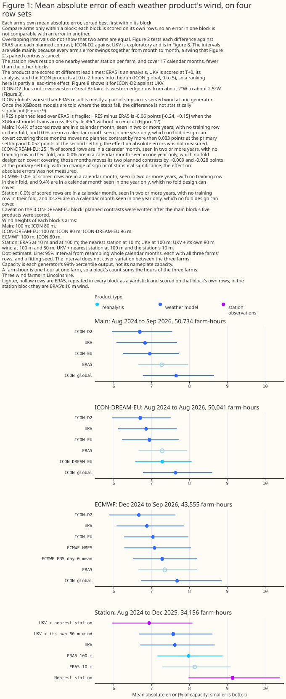
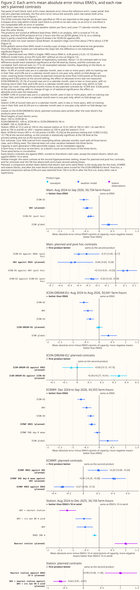
At these three wind farms, the page recommends products for two of the four consumers of past weather, the parts of the project that read weather that has already happened, and makes no recommendation for the other two. Each recommendation rests on the errors of XGBoost models given the named product's wind, plus the time of day, the season, and which side of the Met Office's upgrade of UKV on 21 January 2026 an hour falls on.
- Historical features in the live service, which give the live forecasting model the weather of hours already past: UKV, with ICON-D2 an alternative where ICON-D2 reaches. ICON-D2's western edge runs from about 2°W on the south coast to about 2.5°W in the Midlands, so it does not reach all of Great Britain, and its lead over UKV has not been statistically significant since UKV's upgrade. See Discussion: what to use.
- Training history, the years of past weather that pre-training a forecasting model needs: ICON-D2 where ICON-D2 covers, from November 2022, with ICON-EU or ERA5 elsewhere. This study scores none of them before August 2024. See Discussion: what to use.
- ECMWF's HRES and ENS day 0: not recommended for historical features or for training history on this evidence. See Discussion: what to use.
- Nearby weather-station wind, from the Met Office's MIDAS Open archive: worse than ERA5's 10 m wind on its own, and a smaller gain added to UKV than ICON-D2's hub-height wind. See Discussion: what to use.
- Capacity estimation, which infers a farm's size from how its output tracks the wind, and disaggregation, which separates hidden generation from demand at a substation: no recommendation. See Discussion: what to use.
Separately from those two consumers, giving an XGBoost model all five products at once beats giving it UKV alone, with UKV's neighbouring hours, by 0.48 points [0.40, 0.56], a post hoc comparison. See Does blending weather products beat the best single weather product?
How this page was made. The research question came from a human. Everything else — the code behind every result, the analysis, the figures, and the text — was written by Claude, Anthropic's AI model (for this page, Claude Opus 5.5 and Claude Sonnet 5, reusing the data-preparation and model-fitting code that Claude Opus 5 wrote for the beam/diffuse study). Several independent Claude reviewers have checked the method, the evidence, and the prose adversarially.
Key findings
Each finding below is labelled planned, exploratory, or post hoc. A planned comparison was written down before any result existed, every other comparison is exploratory, and a post hoc comparison is a planned one whose inputs changed after the first run or an exploratory one added after results were seen. How the comparison was made says which planned contrasts of this page are post hoc, and the Methods page gives the rule.
Figure 1's intervals are wide because every product's error rises and falls together from month to month, so two products whose intervals overlap in Figure 1 can still differ by a margin that is statistically significant at the 5% level. The lower panel of each block of Figure 2 pairs two products on the same hours, which cancels the shared swing. The Methods page explains the intervals.
- In an exploratory seasonal split, UKV's and ICON-D2's advantages over ERA5 are estimated larger from April to September than from October to March, and from October to March only ICON-D2's advantage over ERA5 is statistically significant at the 5% level. See UKV and ICON-D2 describe past wind best of the five products tested.
- In an exploratory comparison, ICON-D2 leads UKV across the window, and the lead is not statistically significant since the Met Office upgraded UKV in January 2026. See ICON-D2 leads UKV across the window, and its lead is not statistically significant since UKV's upgrade.
- In a post hoc comparison, an XGBoost model given the 80 m wind of ICON-EU, the European ICON model, beats an XGBoost model given ERA5's 100 m wind. See ICON-EU beats ERA5 at 80 m and at 100 m, and UKV's lead over ICON-EU depends on the XGBoost model's settings.
- UKV's lead over ICON-EU is small, 0.13 points [0.01, 0.23] (post hoc), and depends on the XGBoost model's settings. See ICON-EU beats ERA5 at 80 m and at 100 m, and UKV's lead over ICON-EU depends on the XGBoost model's settings.
- In an exploratory analysis, ICON global, DWD's global model, had the largest error of the five as served here, and about half of its gap to ICON-EU is a pair of steps in the wind Open-Meteo's archive serves for ICON global at one generator. See About half of ICON global's gap to ICON-EU is a pair of steps in its served wind.
- In an exploratory comparison on January to September of each year, UKV's lead over ERA5 is 0.46 points in 2025 and 0.75 points in 2026, a change of 0.30 points [0.04, 0.58] after rounding that is statistically significant at the 5% level, while ICON-EU's and ICON-D2's leads did not change by a margin statistically significant at the 5% level. See UKV's lead over ERA5 grew from 2025 to 2026, while ICON-EU's and ICON-D2's did not change by a statistically significant margin.
- In two planned contrasts, ICON-DREAM-EU, DWD's ICON-based reanalysis, does not beat ERA5, and trails ICON-EU, DWD's operational ICON model over Europe, by 0.34 points [0.27, 0.41] at the primary hyperparameter setting and 0.34 points [0.28, 0.39] at the second. See ICON-DREAM-EU does not beat ERA5, and trails ICON-EU.
- On 43,555 farm-hours from December 2024 to September 2026 at three wind farms, UKV beats ECMWF's HRES and ENS day 0, and HRES beats ERA5, in the three planned contrasts, but the third result depends on how the XGBoost model is trained. See UKV beats HRES and ENS day 0, and HRES's lead over ERA5 depends on the training design.
- In exploratory refits added after the first results, HRES's lead over ERA5 is no longer statistically significant at the 5% level when the XGBoost model trains across IFS Cycle 49r1 without being told which side of the upgrade each hour falls on, and ENS day 0 against ERA5 is unresolved. See UKV beats HRES and ENS day 0, and HRES's lead over ERA5 depends on the training design.
- At three farms over 17 months (34,156 farm-hours), in planned contrasts, one nearby 10 m weather station gives a larger error than ERA5's 10 m wind by 0.99 points [0.59, 1.45], and adding the station to UKV changes UKV's error by −0.64 points [−0.81, −0.46] against a control with the same number of columns. See One nearby 10 m weather station trails ERA5's 10 m wind on its own, and lowers UKV's error when added to it.
Introduction
This page is the wind counterpart of Which weather product best describes past sunshine?. Several parts of this project read an estimate of weather that has already happened: capacity estimation, training history, historical features in the live service, and disaggregation. The solar page describes each of these consumers of past weather, which are parts of the project, not electricity customers. Two of the four can use a result about wind: training history, the years of past weather that pre-training a forecasting model needs, and historical features, which give the live forecasting model the weather of hours already past. This page measures how well five weather products describe past hub-height wind at the three metered wind farms in the trial area, named Generator W1, Generator W2, and Generator W3 on this page, and says which product those two consumers should read.
Each product publishes wind at different heights, and each archive serves a different lead, so the comparison has to state the height and the lead each product is scored at. The served lead is how many hours after a run started its archived value was forecast. A lead of zero, written T+0, is the run's analysis: the weather model's best estimate of the weather at the moment the run starts. CAMS, the Copernicus Atmosphere Monitoring Service's satellite retrieval, describes past sunshine best of the eight products on the solar page but publishes no wind, so it is not compared here. ICON-DREAM-EU, DWD's reanalysis, is scored separately in ICON-DREAM-EU does not beat ERA5, and trails ICON-EU, on its own row set. ECMWF's HRES and ENS day 0 are scored separately in the ECMWF results section, on a shorter row set from December 2024 with every product refitted on it. Data and methods says how each product was read. The table below includes the grid, lead, and history of ICON-DREAM-EU, HRES, and ENS day 0 alongside the five, for reference. Figure 3 maps the domain of ICON-D2.
| Product | What it is | Grid spacing, native and as served | Wind heights served | Served lead | Covers all of Great Britain? | Start of the hub-height wind archive read here | Available after |
|---|---|---|---|---|---|---|---|
| ERA5 | ECMWF reanalysis, a consistent record back to 1940 | about 31 km; served on a 0.25° grid | 10 m and 100 m | an hourly analysis | yes | 1940 | about 5 days |
| UKV | Met Office model for the UK | 1.5 km over the UK, coarsening to 4 km at the domain's edges; served at 2 km | 100 m (Open-Meteo also serves 50 m and 80 m) | T+0, the analysis | yes | August 2024 | about 4 hours |
| ICON-D2 | DWD model for Germany and neighbouring countries | 2.2 km; served at about 2 km | 80 m and 120 m | 0 to 2 hours | no: its western edge runs from about 2°W on the south coast to about 2.5°W in the Midlands | November 2022 | about 1.5 hours |
| ICON-EU | DWD model for Europe, nested inside ICON global | 6.5 km; served at about 7 km | 80 m and 120 m | 0 to 2 hours | yes | November 2022 | about 3.5 hours |
| ICON global | DWD global model | 13 km; served at about 11 km | 80 m and 120 m | 0 to 5 hours | yes | November 2022 | about 3.5 hours |
| ICON-DREAM-EU | DWD reanalysis run of the ICON model, over Europe, with its own data assimilation | 6.5 km; served by DWD on ICON's native triangular grid, not by Open-Meteo; read at the nearest cell | every model level (levels 65 to 74 downloaded here); read at level 72 (about 96 m) and 10 m, with levels 71 and 73 added in one exploratory arm | 1 to 3 hours | yes | January 2010 | after each month ends, a month at a time; DWD's readme states a delay of about 2 to 3 months, and August 2026 was on DWD's server by 23 September 2026 |
| ECMWF-IFS-HRES | ECMWF's single high-resolution forecast, read as Open-Meteo's ecmwf_ifs |
about 9 km native (O1280 octahedral reduced Gaussian grid); the served grid before 1 October 2025 is not established | 10 m and 100 m | 1 to 12 hours before 1 October 2025 and 0 to 5 hours from it, inferred from where hour-to-hour jumps fall; Open-Meteo does not document it | yes | January 2024 (Open-Meteo Previous Runs file as downloaded; the 9 km grid file read for a cross-check starts on 1 January 2017), scored here from 1 December 2024, the first whole month after IFS Cycle 49r1 | ECMWF's dissemination schedule lists the 00 UTC run's hourly steps 0 to 90 at 05:45 to 06:12 UTC; Open-Meteo's own delay was not measured |
| ECMWF ENS day 0 | mean of the 51 members of ECMWF's ensemble forecast, hours 00 to 23 UTC of the 00 UTC run's own day | about 9 km native (O1280 octahedral reduced Gaussian grid) since IFS Cycle 48r1 on 27 June 2023; served on a 0.25° grid in 3-hourly steps rebuilt to hourly here, each value the area-weighted mean of the 0.25° cells overlapping the farm's resolution-5 cell of the H3 hexagonal grid, with the eastward and northward wind averaged before the speed is taken | 10 m and 100 m | 0 to 23 hours | yes | April 2024 (Dynamical.org's archive of the 00 UTC run starts on 1 April 2024); this study reads it from 1 December 2024 | about 09:00 UTC for a 00 UTC run, this repository's assumption; ECMWF's dissemination schedule lists the 00 UTC ENS perturbation forecasts' hourly steps 0 to 90 at 06:40 to 06:55 UTC, and open-data publication and Dynamical.org's ingest come later and are not measured here |
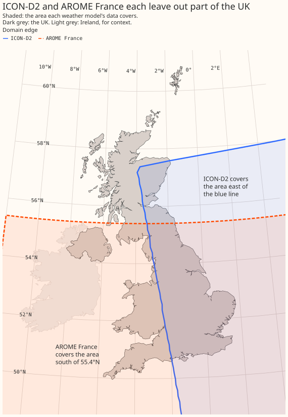
Data and methods
Every error on this page is a mean absolute error as a percentage of each generator's own
capacity, and this section states only what is specific to this page. The Methods
page holds what the past-weather studies share: the capacity
normalisation that defines the capacity, the month-block
folds, the bootstrap intervals, the
rule for planned and exploratory comparisons, and
the second hyperparameter setting. No wind
measurement is used. Each error is that of an XGBoost model fitted per generator to predict hourly
output from one product's wind, so the figures rank how much each product's wind says about the
output, not how close its speeds are to the true wind. An arm is one XGBoost model per generator,
given one set of feature columns. A fold is a block of whole calendar months held out while the
XGBoost model is fitted on the other months, as the Methods page
defines. "The report" of a row set is the report.md that the row set's study script writes;
Reproducing the figures names each one.
Where each product comes from, and its height, lead, and history
ERA5 comes from Open-Meteo's copy of the Copernicus archive, and the other four from Open-Meteo's
historical-forecast archive. verify_era5_sources.py checked Open-Meteo's ERA5 radiation and
temperature against the Copernicus original. The next paragraph reports the comparison of
Open-Meteo's wind with native sources. ERA5 is built as a consistent multi-decade record from one
fixed weather model, not for local wind at a single farm, and two of the three farms here share one
ERA5 grid cell.
Open-Meteo's processing of two wind products has been checked against the native source, and four others have not. We compared Open-Meteo's ERA5 100 m and 10 m wind with native ERA5 from the Copernicus Climate Data Store. The two match to within Open-Meteo's rounding of 0.1 km/h (root-mean-square difference 0.06 km/h, ratio of means 1.0000), using the nearest grid cell with no interpolation and no scaling factor. Two of the three wind farms share one ERA5 cell, so this evidence covers two independent series. We also compared Open-Meteo's ICON-EU with the same model from Dynamical.org, and radiation, 2 m temperature, and 10 m wind match to within rounding. We have not checked Open-Meteo's ICON-family 100 m wind against a native source. Open-Meteo documents that it scales the native 120 m speed by 0.98 to give 100 m, and no native ICON 100 m wind is on disk. The height scored on this page is 80 m, so this check would not cover it either. We have also not checked ICON-D2 wind, UKV wind, or the IFS products. Wind speeds in these products are instantaneous values, and radiation values are hour-ending averages. The ICON-EU comparison covered 10 m wind only, not the 80 m wind scored on this page, and ICON global's wind has not been checked either, so the four products not checked are ICON-D2, ICON global, UKV, and HRES.
- Hub heights. The three wind farms' hub heights are not known. For each ICON product, Open-Meteo serves a 100 m wind that is the product's 120 m speed multiplied by 0.98, so an XGBoost model cannot tell the served 100 m wind apart from the 120 m speed. The XGBoost model is therefore given each ICON product's 80 m wind, which is not a fixed multiple of another height, and ERA5's and UKV's 100 m wind. Three method choices were checked, among them giving the XGBoost model UKV's 80 m wind instead.
- Leads. ERA5's hourly wind is an analysis at every hour, not a forecast. ERA5's largest hour-to-hour jumps fall between 09 and 10 UTC and between 21 and 22 UTC, the boundaries of the 12-hour windows in which ERA5 absorbs observations, not at the start of its forecasts. The served leads for ICON-D2 and ICON global come from where their hour-to-hour jumps fall, because a jump marks the hour at which the archive switches from one run to the next. ICON-EU's jumps show its 3-hourly pattern only weakly, so ICON-EU's lead rests on its 3-hourly run cycle and on the lineage check described in Where each product comes from, and its served lead. The ICON leads here are an hour shorter than the solar page's 1 to 3 hours, because wind is an instantaneous value at the hour's timestamp while radiation is a mean over the hour before it.
- History. Open-Meteo's archive of UKV hub-height wind starts in August 2024. This study starts on 12 August 2024, when Open-Meteo's own UKV downloader started, so the comparison covers only 2 years. ERA5 starts in 1940, and Open-Meteo's archive of the ICON products' 80 m wind starts in November 2022. DWD has run ICON global and ICON-EU since 2015, and ICON-D2 since February 2021.
How the comparison was made
The method is the solar study's, described on the Methods page, with three differences: each hour of power is centred on its timestamp, hours holding an exactly-zero half-hour are dropped, and every product is read from its nearest grid cell over land.
Four row sets are scored, and each block of Figures 1 and 2 is one row set. Every product in a block is scored on the block's own hours, so an absolute error in one row set is not comparable with an error in another. The last column is the number of calendar months that each interval of the row set resamples.
| Row set | Arms scored | First to last hour | Farm-hours | Calendar months resampled |
|---|---|---|---|---|
| Main | ERA5, UKV, ICON-D2, ICON-EU, ICON global | 12 August 2024 to 10 September 2026 | 50,734 | 26 |
| ICON-DREAM-EU | The five main-row-set products and ICON-DREAM-EU | 12 August 2024 to 31 August 2026 | 50,041 | 25 |
| ECMWF | The five main-row-set products, HRES, and ENS day 0 | 1 December 2024 to 10 September 2026 | 43,555 | 22 |
| Weather station | 11 arms: the nearest station; the mean of the three nearest stations; ERA5's 10 m wind; ERA5's hub-height wind; UKV; UKV plus the station; UKV plus UKV's own 80 m wind; UKV plus ICON-D2; ICON-D2; ICON-EU; ICON global | 12 August 2024 to 31 December 2025 | 34,156 | 17 |
- Same hours, same XGBoost model, same number of inputs. An hour is kept only if all five products cover it. A gradient-boosted tree (XGBoost) is fitted per generator on one product's hub-height speed, that height's direction, and its 10 m speed. The tree is also given the time of day (the UTC hour of the label, 0 to 23), the season (the day of the year, 1 to 366), and an era code. An era is a period between two changes in a product's data, and the era code says which era an hour falls in. Here the two eras are the two sides of the Met Office's PS47 upgrade of UKV, on 21 January 2026, and an era cut is a boundary between eras. Time of day and season enter as plain integers, and a direction enters as the sine and the cosine of its angle in degrees. No hour is removed for curtailment, because National Grid Electricity Distribution (NGED), the distribution network operator this project forecasts for, has confirmed that no wind farm in the trial area is under active network management.
- The power hour is centred on its timestamp. Open-Meteo's wind is an instantaneous value at the timestamp, where its radiation is a mean over the hour before. So the hour of power labelled T is the hour from 30 minutes before T to 30 minutes after. Every product scores best with the hour centred this way.
- Every hour holding an exactly-zero half-hour is dropped. From April 2026 NGED's telemetry feed publishes no exact zeros at two of the generators. Their calm half-hours are missing instead, and the build already drops an hour with a missing half-hour. Dropping every hour holding an exact zero, before April 2026 as well, makes the two periods match. Most dropped hours are calm, so behaviour near the turbines' cut-in speed is under-sampled.
- Every product except ENS day 0 is read from its nearest grid cell over land. At one generator ICON global's nearest cell is influenced by the sea, and outside June 2025 to June 2026 its 10 m speed runs about 30% above that of the nearest land cell. At the other two generators ICON global's nearest cell is the land cell. The ECMWF arms describe how ENS day 0 is read.
- Folds. The folds are cut separately before and after the UKV upgrade, and the rest of January
2026 after the upgrade is dropped. Within each era, a generator's calendar months, in time order,
are cut into five contiguous blocks of near-equal size (
assign_foldsinstudies.cross_validation), and all three generators share the same month-to-fold assignment. The table below lists each block's assignment. The ECMWF block has three eras, the second beginning on 1 October 2025 and the third on 1 February 2026, and rotates the third era's fold numbers by 2 (cut_eras). The weather-station row set ends before the UKV upgrade, so it has one era. - Planned, post hoc, and exploratory contrasts. The main row set has four planned contrasts, written into the study plan before the first run: ICON-EU against ERA5, UKV against ERA5, ICON-EU against UKV, and ICON-D2 against ICON-EU. The plan gave the XGBoost model each product's served 100 m wind. After the first run, each ICON product was switched to its 80 m wind, so the three planned contrasts that involve an ICON product (ICON-EU against ERA5, ICON-EU against UKV, and ICON-D2 against ICON-EU) use arms chosen after the first run, and this page calls them post hoc. A post hoc comparison is either a planned one whose inputs changed after the first run, as on the main row set's ICON contrasts, or an exploratory one added after results were seen. UKV against ERA5 stays planned, because UKV's wind height did not change. The results with the served 100 m wind are reported alongside and change no ranking. ICON-D2 against UKV is exploratory. The ICON-DREAM-EU, ECMWF, and weather-station row sets have planned contrasts of their own, described with each row set below. Every other figure on this page is exploratory.
- The primary and second hyperparameter settings. Every figure is at the primary setting unless it says "second setting", and Data and code availability gives both settings' values. The Methods page says which contrasts are rerun at the second setting. On this page every planned contrast is rerun at the second setting, and a contrast near the 5% line is rerun where both arms have saved second-setting losses. Not every contrast is rerun, because the rerun is meant for the verdicts that a change of setting is most likely to move, the planned contrasts and those near the line. The main row set's five products were all refitted at the second setting.
- Capacity. Each generator's capacity is a constant, stored in the
effective_capacitytable, which the Methods page defines; on this page it is measured over the generator's whole observed history, not over the study window.
Each block's months fall into five folds as the table shows. A month label is the UTC calendar month of a row's timestamp. The main and ICON-DREAM-EU row sets hold January 2026 in the earlier era, with the rows of 21 to 31 January dropped.
| Fold | Main rows | ICON-DREAM-EU rows | ECMWF rows | Weather-station rows |
|---|---|---|---|---|
| 0 | Aug to Nov 2024; Feb to Mar 2026 | Aug to Nov 2024; Feb to Mar 2026 | Dec 2024 to Jan 2025; Oct 2025; Jul to Aug 2026 | Aug to Nov 2024 |
| 1 | Dec 2024 to Mar 2025; Apr to May 2026 | Dec 2024 to Mar 2025; Apr 2026 | Feb to Mar 2025; Nov 2025; Sep 2026 | Dec 2024 to Feb 2025 |
| 2 | Apr to Jun 2025; Jun 2026 | Apr to Jun 2025; May to Jun 2026 | Apr to May 2025; Dec 2025; Feb to Mar 2026 | Mar to Jun 2025 |
| 3 | Jul to Oct 2025; Jul to Aug 2026 | Jul to Oct 2025; Jul 2026 | Jun to Jul 2025; Jan 2026; Apr to May 2026 | Jul to Sep 2025 |
| 4 | Nov 2025 to Jan 2026; Sep 2026 | Nov 2025 to Jan 2026; Aug 2026 | Aug to Sep 2025; Jun 2026 | Oct to Dec 2025 |
Covering the avoidable share moves no planned contrast on the main row set by more than 0.052 points. Rotating the post-upgrade era's fold numbers by 2 covers the avoidable share on the main and ICON-DREAM-EU row sets. The ECMWF row set covers its months through its own rotation of the third era's fold numbers, and the weather-station row set has one era. On the main row set that rotation moves no planned contrast by more than 0.033 points at the primary setting and 0.052 points at the second setting. On the ICON-DREAM-EU row set it moves the two planned contrasts by +0.009 and −0.028 points at the primary setting, with no change of sign or of statistical significance. The weather-station row set has an avoidable share of 0.0%, so there is nothing for the rotation to cover (its unavoidable share is 42.2%).
The rotation also moves the main row set's absolute errors by little. ERA5's error goes from 7.272%
to 7.249% of capacity at the primary setting, and from 7.310% to 7.265% at the second setting, and
the largest shift in any arm (ERA5, ICON-D2, ICON-EU, and UKV) is 0.023 points at the primary
setting and 0.045 points at the second. The effect on absolute errors was not measured for ICON
global or for the ICON-DREAM-EU, ECMWF, and weather-station row sets. The main row set's
contrast figures are on line 9 of studies/era_fold_design/report.md, and the ICON-DREAM-EU
figures on line 11, on the era-fold-design branch at commit fdddb065.
The ICON-DREAM-EU arms
Every arm — one XGBoost model fitted on one product's set of feature columns — including the five products already scored above, is refitted on ICON-DREAM-EU's own row set: 50,041 farm-hours from August 2024 to August 2026. ICON-DREAM-EU's record stops 10 days short of the other five products', ending 31 August 2026 against their 10 September 2026, so every arm is refitted on ICON-DREAM-EU's months, giving every arm the same folds, rather than setting ICON-DREAM-EU's fits beside fits whose folds were cut over a longer window. This section therefore rests on its own, shorter row set than the rest of the page, though the row-build rules — the same power hour, the same zero-half-hour drop, the same fold boundary at the UKV upgrade — are otherwise identical.
ICON-DREAM-EU is read from a gridded download, at DWD's model level 72, about 96 m, rather than
fetched at each generator's coordinates. Its direction comes from its U and V wind-component
fields at that level, and its 10 m speed from its own surface field. Each generator reads the
nearest ICON-DREAM-EU grid cell, 1 to 4 km away.
ICON-DREAM-EU's hourly wind is a 1 to 3 hour forecast, never an analysis. DWD's readme does not say how the hourly series is built, but the files read here hold short forecasts from runs every 3 hours. At 00, 03, 06 UTC and every third hour after, ICON-EU is served here as a T+0 analysis, but ICON-DREAM-EU at the same hour is a 3 hour forecast from the previous run, the longest lead in its own cycle. The padding hours that cfgrib, the library that decodes DWD's GRIB files, fills in at each month boundary establish that ICON-DREAM-EU's hourly series is a forecast, not an analysis: they fall at 22:00 and 23:00 before the month and 00:00 of the next one, which fits a run every 3 hours starting from 00 UTC, giving steps 1 to 3. A second, independent check agrees: the mean absolute hour-to-hour change in level 72's speed, over every cell in the download, is 0.604 m/s at the hour a new run's first step arrives, against 0.561 and 0.562 m/s within a run, because a fresh run, started from a new analysis, replaces the previous run's 3-hour forecast rather than continuing it.
Every check below passed before any arm was fitted. ICON-DREAM-EU's speed from its U and V
wind components agrees with its own served scalar speed almost exactly: a median absolute
difference of 0.0003 m/s at level 72 and 0.0002 m/s at 10 m. ICON-DREAM-EU's direction disagrees
with ERA5's own 100 m direction by 10.4 degrees mean absolute, consistent across all three
generators (10.1 to 10.5 degrees). As a same-method baseline, over the same row set ICON-EU
disagrees with ERA5's direction by 9.2 degrees, ICON-D2 by 10.5 degrees, and UKV by 10.6 degrees, so
ICON-DREAM-EU's 10.4 degrees sits inside the range already seen between products already trusted,
not a sign of a wrong meteorological convention. The hour-to-hour correlation between
ICON-DREAM-EU's and ERA5's speed changes peaks at zero offset (0.436), clearly higher than at plus
or minus one hour (0.345 and 0.322) or plus or minus two hours (0.194 and 0.181), confirming
ICON-DREAM-EU's served value carries no whole-hour offset relative to ERA5.
The ICON-DREAM-EU row set has two planned contrasts of its own. They are ICON-DREAM-EU against ERA5 and ICON-DREAM-EU against ICON-EU, written into that section's plan before ICON-DREAM-EU was fitted but after the five products above had been scored.
The ECMWF arms
The ECMWF section rests on a plan committed before its first fit. The plan
holds the three planned contrasts. The plan was committed as 9bb0a6f7, and the plan's last
revision before any fit is 83dbbad3. The script that fitted every
XGBoost model, ens_hres_past_wind.py, was committed as 83dbbad3 before its first fit, and the
report records that commit.
HRES comes from Open-Meteo's Previous Runs file, and ENS day 0 from the saved inputs of the ENS
forecast horizons page. HRES is read from Open-Meteo's Previous Runs file, because that file
carries wind direction, where the 9 km grid file holds wind speed only, in kilometres per hour. The
grid file serves one cross-check: at each farm, one of the five nearest grid points reproduced the
Previous Runs speeds on every hour (71,712 farm-hours), which shows that two Open-Meteo downloads
agree and does not show that the grid or the served lead is right. ENS day 0 is read from the saved
inputs of the ENS forecast horizons page.
fetch_ens_forecast_horizons.py extracts those inputs from the production NWP Delta table, which
the Dagster ecmwf_ens asset fills from Dynamical.org's ECMWF ENS archive (00 UTC run, 0.25°), and
ens_forecast_horizons.py writes them to wind_inputs.parquet.
ENS day 0's 3-hourly steps and 0.25° grid come from Dynamical.org's archive, and this study does not establish which of ECMWF's earlier open-data restrictions that archive inherits. ENS runs four times a day. ECMWF's dissemination schedule lists hourly steps to 90 hours. Dynamical.org's archive holds the 00 UTC run in 3-hourly steps on a 0.25° grid, and this study rebuilds the steps to hourly. Open-Meteo's announcement of ECMWF's move to open data describes ECMWF's earlier open-data stream as limited to 0.25° grid spacing, with fewer variables, reduced time resolution, and an additional 2 hours of delay. ECMWF's announcement says that its entire real-time catalogue became open on 1 October 2025, with a free subset published at 25 km resolution.
The 09:00 UTC read time for ENS day 0 is an assumption of this repository, and this study did not
measure when each product's data arrive. The assumption is this repository's
NWP_PUBLICATION_DELAY_HOURS setting. ECMWF's schedule lists the 00 UTC ENS perturbation forecasts'
hourly steps 0 to 90 at 06:40 to 06:55 UTC and the 00 UTC HRES steps 0 to 90 at 05:45 to 06:12 UTC.
Open-data publication and the ingest of Dynamical.org and Open-Meteo come later than those times.
HRES is read from Open-Meteo's Previous Runs interface at each farm's land cell, and this study
infers its served lead. HRES is read at each farm's point, at Open-Meteo's default land cell (the
Previous Runs fetch sets no cell_selection), as every other Open-Meteo product on this page is
(fetch_wind_point.py sets land). Open-Meteo's documentation says only that each run's first few
hours are stitched into a continuous hourly series, so HRES's served lead is inferred. Open-Meteo's
announcement says that from 1 October 2025 it redistributes HRES at 9 km "without any additional
delay". This study places a change of HRES's archive source on 1 October 2025, the date given in
both Open-Meteo's and ECMWF's announcements, because the served series' hour-to-hour jumps change
there. Before that date the served series hands over between runs twice a day. That handover
describes how Open-Meteo's archive assembles the series, and this study does not attribute it to
ECMWF.
HRES's served lead is inferred from where hour-to-hour jumps fall: 1 to 12 hours before 1 October 2025, and 0 to 5 hours from that date. Before 1 October 2025 the 100 m wind speed's hour-to-hour change at 01 UTC is 1.32 times the mean of its two neighbouring hours' changes, and at 13 UTC 1.29 times, the arrival hours of the 00 and 12 UTC runs.
The 07 UTC jump is consistent with the morning boundary-layer transition and is not read as a handover. A jump of 1.19 at 07 UTC is not explained by a run schedule. It is concentrated in May to August: on the main row set HRES's 07 UTC ratio is 1.39 in May, 1.11 in June, 1.49 in July, and 1.12 in August, and below 1.08 in every other calendar month. The same ratio for ERA5, an analysis with no handover between runs, is 1.28 in May and 1.30 in August, and UKV's does not exceed 1.18 in any month. No jump appears at 19 UTC.
From 1 October 2025 the jumps fall at 00 UTC (1.20), 06 UTC (1.15), and 18 UTC (1.14), and the jump at 12 UTC (1.08) is below the report's threshold of 1.10 for wind. The plan wrote the threshold as 1.15, and 1.10 was chosen after the results were seen. At the plan's threshold both expected hours before 1 October 2025 reach it at 100 m, and one of the four expected hours from that date does. An hour above the threshold is evidence of a handover, not proof of one.
The Previous Runs file's null pattern gives stronger evidence for the change of source than the
hour-to-hour jumps do. Of the 1,072,512 values in its 49 _previous_day* columns before 1 October
2025, 1,320 are not null (the last on 2025-01-07), against 1,191,935 of 1,263,024 from that date,
and from that date the one-day-earlier 100 m wind speed jumps at 00 UTC (1.30), 06 UTC (1.21), 12
UTC (1.23), and 18 UTC (1.21), all four expected hours.
IFS Cycle 49r1 went live on 12 November 2024, and Cycle 50r1 on 12 May 2026. Cycle 49r1 went live with the 06 UTC run of its day, according to ECMWF's implementation page, and Cycle 50r1 with the 06 UTC run of its day.
In the planned ENS arm, wind direction is kept out of every average and interpolation, and two of the three exploratory arms do not. Each ENS member's speed and direction become eastward and northward components at each 3-hourly step, the components are interpolated linearly to hourly values, and the hourly speed and direction come from the interpolated vector. The mean of the 51 members' speeds is the ENS speed, and the direction of the mean wind vector is the ENS direction. The three exploratory arms differ from the planned arm only in the interpolation. The horizons page's own combination interpolates the speed by components and the direction in degrees, which crosses north the wrong way in some hours. A second arm interpolates both speed and direction linearly, and a third interpolates the speed linearly and the direction by components. Each XGBoost model in this section is given the page's seven columns: the hour of the day, the day of the year, an era code, the hub-height speed, that height's direction as sine and cosine, and the 10 m speed. HRES, ENS day 0, ERA5, and UKV are read at 100 m.
The row set starts on 1 December 2024, and the folds are cut inside three eras. December 2024 is the first whole month after IFS Cycle 49r1. Every product is refitted on the same 43,555 farm-hours (W1 14,489, W2 14,994, W3 14,072) in 22 calendar months. The three eras are before 1 October 2025, when the source of HRES's archive changed; 1 October 2025 to 20 January 2026; and from 1 February 2026, after the UKV upgrade. The era code takes three values for every XGBoost model. The second hyperparameter setting is rerun for HRES, ENS day 0, UKV, and ERA5.
Cutting folds inside each era can leave a calendar month with no training data, so the third era's fold numbers are rotated. Cutting folds inside each era ranks each era's months separately, so one calendar month can be held out of every era at once and leave no training data for that season (issue #868). A check before any fit found six such cases across the three farms, for July and September, so the third era's fold numbers are rotated by 2, which leaves no failing case.
October and November cannot be covered by any fold design, because each occurs in one year only. October and November occur in one year only, 2025, so whichever fold holds either month out has no training row for that calendar month under any fold design. In the study's design the covered cell (one farm, one fold, and one calendar month) with the fewest training rows is a September fold at one farm, with 229 training rows against 680 rows scored.
Every ECMWF figure other than the three planned contrasts is exploratory. The results below label each exploratory figure.
The weather-station arms
One section of this page tests how well a 10 m anemometer 6 to 18 km away stands in for the wind at a turbine's hub height. The section adds the wind of the nearest weather station to the products above. It uses the same three farms and the same XGBoost model per farm, and it reads weather that has already happened, so it says nothing about a live weather-station feed.
The stations come from MIDAS Open, the Met Office's open archive of UK land-station observations,
and the 18 candidates are the stations in the downloaded hourly-weather file whose wind speeds carry
a MIDAS unit code. MIDAS is the Met Office Integrated Data Archive System, and the Centre for
Environmental Data Analysis (CEDA) publishes MIDAS Open. The unit code is 4, an anemometer reading
in knots, on every row, and the download script converts the knots to metres per second. The release
is dataset-version-202607, at quality-control version 1.
Of the file's 38 stations, 18 report an hourly wind speed, 12 report no wind speed at all in this file, and 8 return one reading a day, at 09:00. Of those 8 stations, 7 carry a wind speed with no unit code. Their speeds sit on Beaufort-force midpoints, which suggests the wind is estimated. None of the daily stations is a candidate. The 12 stations with no wind in this file were not looked up in MIDAS Open's other wind datasets, so a nearer anemometer may exist.
The 38 stations are a list assembled by hand in the download script, so "nearest" means nearest among those 38, and a nearer station outside the list is not ruled out. The download's README reconstructs the rule behind the list as a record that runs to 2025 or later and a location within a fixed distance of at least one of the studies' sites, with one exception, a station whose record ends in 2024. Each farm reads its nearest candidate station whose hours cover at least 90% of the farm's hours, and every nearest station covers at least 99.7%. The nearest station lies 6 to 18 km from its farm, and the third-nearest 25 to 37 km. A farm-hour is dropped where its nearest station has no reading, which removes 27 of the 34,183 farm-hours in the window and leaves the 34,156 that every arm in this section is scored on. The rule reads no target and no score.
Exposure differs widely between the 18 candidates. Over the window, the candidates' mean 10 m speeds run from 2.7 to 6.0 m/s, and each candidate's share of calm hours runs from 0.02% to 1.61%. Sheltering usually depends on wind direction, which may be part of what the station's direction columns recover.
The window runs from 12 August 2024 to 31 December 2025, 17 calendar months with August 2024
partial, because MIDAS Open is released once a year. CEDA's own guide gives the example that the
202007 release, in July 2020, holds data to the end of 2019. The release read here,
dataset-version-202607, holds data to the end of 2025. The next annual release, about July 2027 by
the same pattern, would be expected to add 2026. The window therefore ends before the Met Office's
upgrade of UKV in January 2026, so this section scores UKV before that upgrade only.
A reading stamped T is a 10-minute mean from about T − 20 to T − 10 minutes, so it sits about 15 minutes before the centre of the power hour stamped T. The Met Office Surface Data Users Guide gives the SYNOP (surface synoptic observation) 10-minute mean wind as "10-minute average, HH-20 to HH-10". Of the 18 candidates, 14 carry SYNOP rows only, 3 carry only rows of the automatic-weather-station hourly report message type (AWSHRLY), and 1 carries both types. The averaging window of the AWSHRLY reports is not documented in what was read. If an AWSHRLY mean ends on the hour, not 10 minutes before it, the reading moves by 10 minutes, which is less than hourly data can resolve. The standard exposure is 10 m over open level terrain, and a station with another exposure has an "effective height", so the 10 m height is nominal.
A reading is joined to the power row with the same UTC stamp, the alignment at which the nearest station's speed correlates most with UKV's 10 m speed. The correlation of the nearest station's speed with UKV's 10 m speed is 0.848 at that alignment, against 0.837 with the station's reading one hour later and 0.814 one hour earlier. Hourly data cannot test a shift of less than an hour.
The station reading is a same-hour observation, which is fair against ERA5 and UKV and favours the station against the ICON products. ERA5 and UKV are read as analyses, at lead zero. ICON-D2 and ICON-EU are served at leads of 0 to 2 hours and ICON global at 0 to 5, so a reading at lead zero gives the station an advantage over the ICON products.
Speeds are whole knots and directions are in steps of 10 degrees, which the XGBoost model sees as they are. No estimated speed enters, because every wind speed row of the 18 candidates carries unit code 4. North is written 360 and a calm hour is written 0. The calm flag is set before 360 is mapped to north, and a calm hour enters as sine and cosine both zero.
Scaling the station's 10 m speed to 100 m with a fixed power-law exponent of 1/7 cannot help an XGBoost model. An XGBoost tree ignores a monotone rescaling of one column, and fitting one fold of one farm on the raw and the scaled speed gave predictions that differ by 0 MW. The exponent is a guess.
No row is filtered on a quality-control flag, although flag 106 covers every wind row of one candidate station. Quality-control flag 106 is set on whole stations or on runs of several months, never on isolated hours. In MIDAS's five-digit quality-control code, 106 has status digit 1, "observed and suspect (i.e. has failed the latest QC check), or there are strong grounds for suspecting the accuracy of the observation", and level digit 6, "final (or only) areal or buddy job run and queries processed". The flag is on every wind row in the window at one of the 18 candidates. This page does not say whether that station was chosen. One further candidate carries the flag on a run of several months at the end of the window. Whether excluding a flagged station moves either planned contrast was not checked.
The plan for this section was committed before any fit, and only two contrasts were planned. The
plan first named the two contrasts in commit 7bc23521, before any station arm was fitted but after
the five products above had been scored. The script that fitted the main arms was committed as
021d0852 before its first fit. The three arms added after the first results were written down in
commit 750b130d and fitted at commit 72d969b8. Both planned contrasts are between arms with the
same number of feature columns.
- S1, planned: an XGBoost model given the nearest station's speed and the sine and cosine of its direction, against an XGBoost model given ERA5's 10 m speed and the sine and cosine of ERA5's 100 m direction. The ERA5 download holds no 10 m direction. Each arm has 3 wind columns.
- S2, planned: an XGBoost model given UKV's four columns from the rest of this page plus the station's three, against an XGBoost model given UKV's four columns plus UKV's own 80 m speed and the sine and cosine of its 80 m direction. Each arm has 7 wind columns, so the second arm is a control for the extra columns.
Every other figure in this section is exploratory. The plan named these before any fit:
- the mean of the three nearest stations against the nearest station
- UKV plus the station against UKV alone
- S1 and S2 scored on August to December only
- S1 and S2 at each farm
- a shear control
These were chosen after the first results were seen:
- the two arms that give each source's speed alone
- the arm that adds ICON-D2 to UKV
- S1 and S2 scored on January to July
- the per-calendar-month means
- the calendar-month weighting, which gives each calendar month equal weight
- the contrast of ERA5 with and without its hub-height speed
- the contrast of S2's control, UKV plus UKV's own 80 m wind, with UKV alone
- the contrast of the mean of three stations with ERA5's 10 m wind
- the differences between farms and between seasons
- the two intervals that do not treat months as independent
Every arm in this section is refitted on the 34,156 farm-hours, so an error here differs from the same product's error above. That includes each product's wind arm from the rest of this page.
About one of the 24 exploratory paired-difference intervals at the main setting would be statistically significant at the 5% level by chance alone. The report prints all 24.
The folds are five blocks of 4, 3, 4, 3, and 3 calendar months. January to July occur once in the window, so an XGBoost model that scores one of them never saw that calendar month. The day-of-year column of that model therefore extrapolates.
Seventeen months are few independent weather episodes, so an interval from a percentile bootstrap can run narrower than it should. The intervals resample 17 calendar months and a fitting seed. The results give two intervals that do not treat months as independent, one from the 5 per-fold differences and one from the 17 per-month differences. A fold agrees with an estimate when the difference, computed from that fold's held-out months alone, has the same sign. The second hyperparameter setting is rerun for every planned contrast. The four planned intervals, two contrasts at two settings counted as separate tests, are adjusted to the 98.75% level, so each bound rests on about 12 of the 2,000 bootstrap resamples.
Results
The XGBoost models follow measured power, and the products rank in the same order at each farm
Given either ICON-D2 or ERA5, the XGBoost model follows the shape of measured power at every generator, in a windy, a variable, and a calm week, except that at W3 both run too high in the windiest week. The two predictions run close together, because ICON-D2's advantage over ERA5 is a small fraction of the error. Figure 4a plots both XGBoost models' out-of-fold predictions against measured power on the main row set. At Generator W3 both predictions run well above measured power for days at a time, most visibly in the windiest week. Generator W3's output swings for months at a time with turbine availability that no product records, as described in UKV and ICON-D2 describe past wind best.
The three weeks are chosen by a rule that reads measured power alone, so the choice cannot favour ICON-D2 or ERA5. The rule pools the three generators. The windiest week is the one in which the generators' mean output was highest relative to their own capacity, and the calmest week the one in which it was lowest. The most variable week is the one whose daily mean output swings the most from day to day. The windiest week fell in December 2024, the most variable week in February 2025, and the calmest week ran from July into August 2026.
Figures 4a and 4b show each week as days 1 to 7, with no calendar dates, because a dated hourly series would identify the wind farm. With only 3 wind farms in the study, a generator's hourly output on known dates could be matched against publicly available generation data. That match would undo the anonymisation that names the generators only as Generator W1 to W3. The page therefore gives each week's month and year in the text and no finer date.
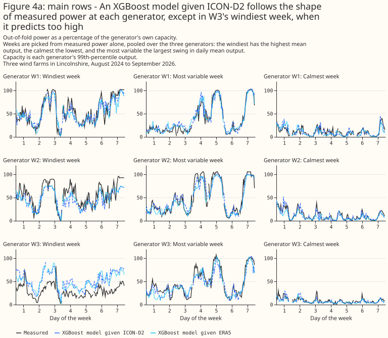
At W1 and W2, and at W3 outside its windiest week, the XGBoost models given HRES's or ENS day 0's wind follow the shape of measured power. On the ECMWF row set, Figure 4b plots out-of-fold predictions against measured power. The weeks are chosen by the rule described above, from measured power alone: the windiest week fell in December 2024, the most variable in February 2025, and the calmest ran from July into August 2026. At Generator W3 in the windiest week both predictions run above measured power on most days, and in the most variable week both run below measured power at its peaks. Both misses are consistent with the turbine availability that no product records. Figure 4b shows days 1 to 7 with no calendar date, for the same reason as Figure 4a.
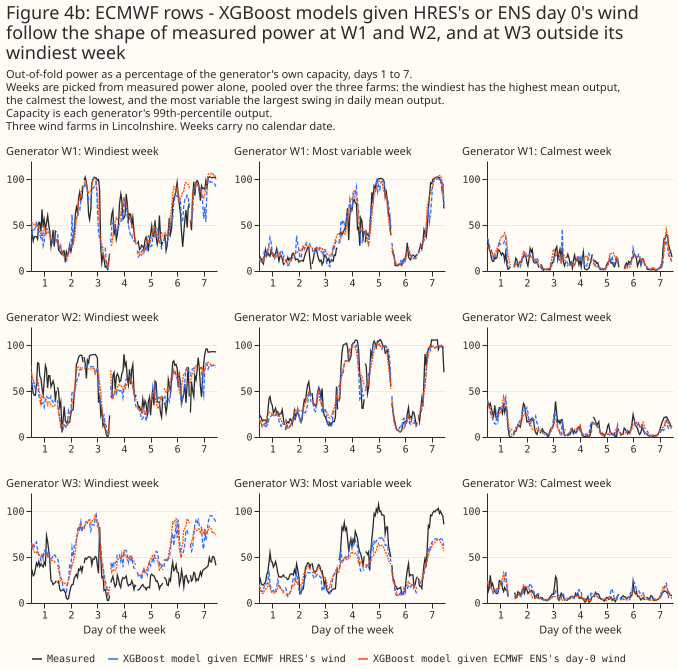
ICON-D2, UKV, ICON-EU, and ERA5 rank in the same order at each of the three generators. Figure 5a plots each product's mean absolute error on the main row set at each generator separately, one dot per product per generator. ICON global is left out of Figures 5a and 5b, because its dots would show which generator carries the steps in ICON global's served wind, described in About half of ICON global's gap to ICON-EU is a pair of steps in its served wind, and this page does not name that generator.
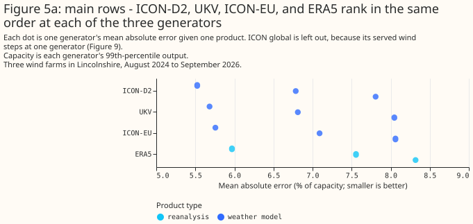
ICON-D2 has the lowest own error at each of the three farms, and HRES's own error is lower than ENS day 0's at each. On the ECMWF row set, HRES's error is 5.94% against ENS day 0's 6.06% at Generator W1, 6.96% against 7.18% at Generator W2, and 8.38% against 8.66% at Generator W3, and ICON-D2's is 5.54%, 6.58%, and 7.92%. No paired contrast was computed at each farm between these products, so the ranking rests on own errors alone. Figure 5b leaves ICON global out, as Figure 5a does, because ICON global's dots would show which generator carries the steps in ICON global's served wind.
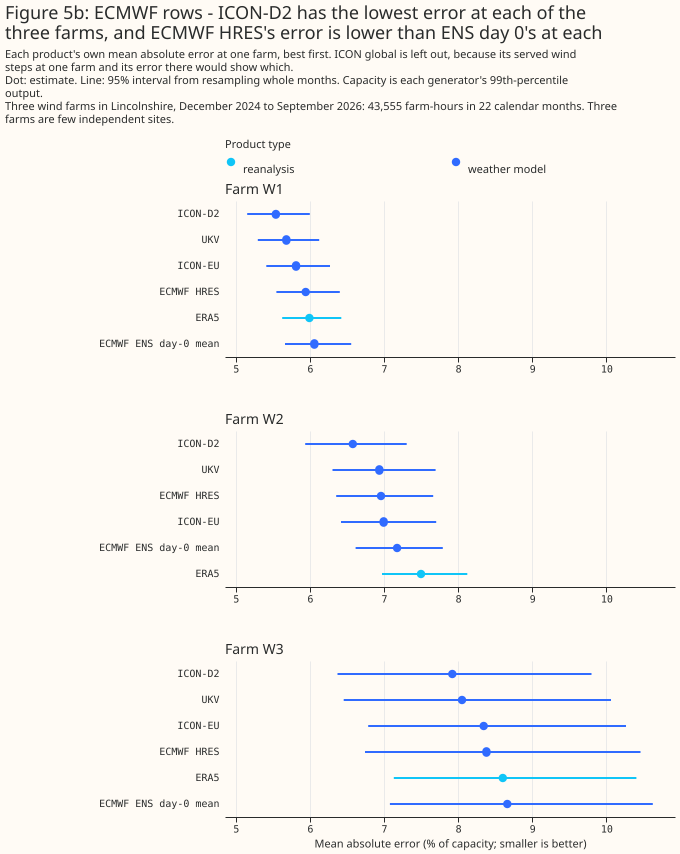
UKV and ICON-D2 describe past wind best of the five products tested
UKV beats ERA5 by 0.44 points [0.24, 0.63] across the window, and ICON-D2 beats ERA5 by 0.58 points [0.40, 0.75]. ICON-D2 also beats ICON-EU at every generator, by 0.26 points [0.19, 0.33] across the three. ERA5 trails every product except ICON global, and Why ERA5 describes past sunshine and wind worse than most current weather products sets out ERA5's documented weaknesses. The table below gives each product's mean absolute error on the main row set.
| Product | Mean absolute error, % of capacity |
|---|---|
| ICON-D2 | 6.69 |
| UKV | 6.83 |
| ICON-EU | 6.96 |
| ERA5 | 7.27 |
| ICON global | 7.65 |
Both leaders' advantage over ERA5 is estimated larger from April to September than from October to March, and only ICON-D2's is statistically significant at the 5% level from October to March. Each half of the year has its own interval, resampled from that half's own months, and no interval is computed for the difference between the halves. UKV beats ERA5 by 0.71 points [0.58, 0.85] from April to September, and is 0.13 points ahead [−0.17, +0.41] from October to March. ICON-D2 beats ERA5 by 0.77 points [0.63, 0.90] from April to September and by 0.36 points [0.08, 0.64] from October to March. The seasonal split rests on parts of three summers and two winters, and its cause was not examined. Figure 6 draws the two halves of the year.
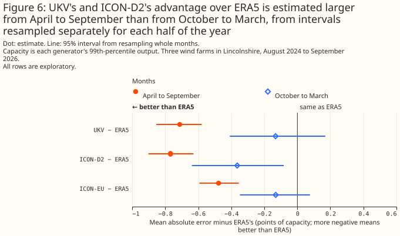
UKV's advantage over ERA5 is estimated larger since its upgrade, and ICON-D2's is not. Since the upgrade UKV beats ERA5 by 0.79 points [0.63, 0.97], against 0.53 points [0.29, 0.72] over the same months of the year before the upgrade. Over the same two periods ICON-D2's advantage over ERA5 is 0.73 and 0.79 points, so the change sits with UKV rather than with ERA5. Each period's interval is resampled from that period's own months, and no interval is computed for the change between periods. The post-upgrade figures rest on 8 months, so their intervals are likely too narrow.
UKV's advantage over ERA5 is statistically significant at the 5% level at two of the three generators. At the third generator the advantage is not statistically significant at the 5% level. That generator's output swings for months at a time against every product's wind, which this page attributes to turbine availability the feed does not record. Figure 7a draws the advantage at each generator.
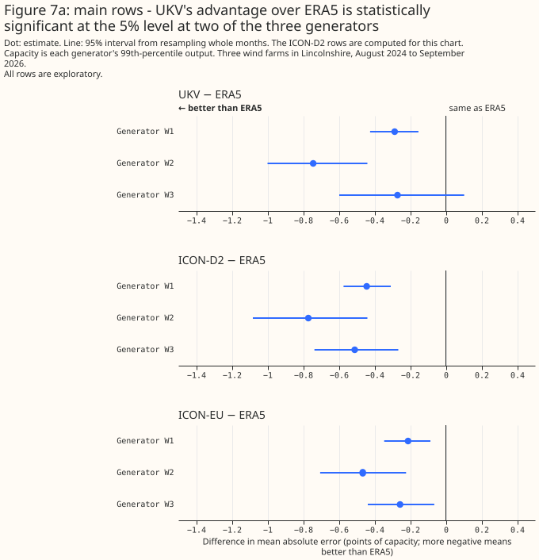
ICON-D2 leads UKV across the window, and its lead is not statistically significant since UKV's upgrade
ICON-D2 leads UKV across the window, and its lead is not statistically significant since UKV's upgrade. Across the window ICON-D2 leads by 0.14 points [0.03, 0.25], an exploratory comparison. Before the upgrade ICON-D2 led by 0.22 points [0.08, 0.36]. Since the upgrade UKV is 0.06 points ahead [−0.03, +0.19], an interval resting on 8 months. Each period's interval is resampled from that period's own months, and no interval is computed for the change in ICON-D2's lead between periods. ICON-D2's lead is also statistically significant at the 5% level from October to March, under the second hyperparameter setting, and with the XGBoost model given UKV's 80 m wind. ICON-D2's lead is not statistically significant at the 5% level from April to September, and with the served 100 m wind the plan specified, where ICON-D2 leads by 0.07 points [−0.03, +0.17]. Figure 8 draws ICON-D2's lead over UKV in each period.
ICON-D2's lead over UKV is largest at the start of each ICON-D2 run. ICON-D2 runs every 3 hours, so at each run hour it is served at T+0, like UKV. On those hours ICON-D2 is 0.30 points ahead [0.19, 0.41]. An hour into the run ICON-D2 is 0.15 points ahead [0.02, 0.27], and 2 hours in the difference between ICON-D2 and UKV is not statistically significant at the 5% level (ICON-D2 0.04 points behind [−0.13, +0.20]). ICON-D2 at T+0 is ahead both before the upgrade, by 0.34 points [0.20, 0.48], and after it, by 0.21 points [0.07, 0.33]. Since the upgrade, 2 hours into each ICON-D2 run, UKV is 0.37 points ahead [0.25, 0.51]. The post-upgrade intervals rest on 8 months, and every comparison in this paragraph was chosen after the first run.
The rate at which ICON-D2's lead shrinks may differ nearer ICON-D2's edge. ICON-D2 takes the weather at its boundaries from ICON-EU, and the three farms sit about 150 to 200 km east of ICON-D2's western boundary.
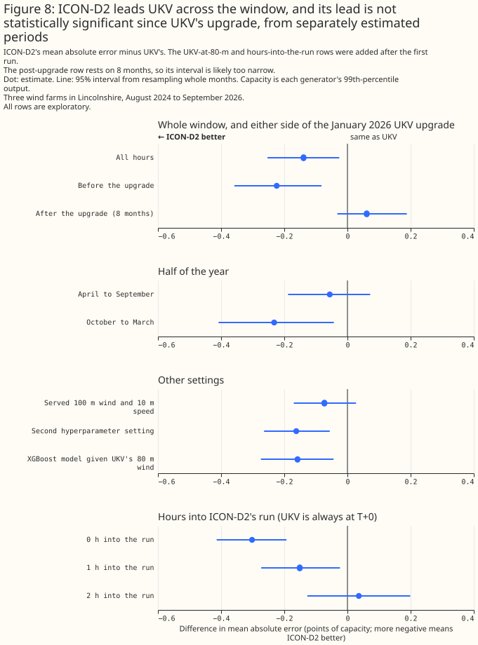
ICON-EU beats ERA5 at 80 m and at 100 m, and UKV's lead over ICON-EU depends on the XGBoost model's settings
An XGBoost model given ICON-EU's 80 m wind beats ERA5 by 0.31 points [0.17, 0.45]. An XGBoost model given the served 100 m wind, which the plan specified before the first run, beats ERA5 by 0.22 points [0.08, 0.35]. Both XGBoost models are also given the 10 m speed. The 80 m wind improves ICON-EU by 0.10 points and ICON-D2 by 0.07 points over the served 100 m wind. ICON-EU's advantage over ERA5 depends on the season, as UKV's does. From April to September ICON-EU is 0.48 points ahead [0.35, 0.59], and from October to March the difference between ICON-EU and ERA5 is not statistically significant at the 5% level (ICON-EU 0.13 points ahead [−0.08, +0.35]).
ICON-EU is 0.13 points behind UKV across the window [0.01, 0.23], a gap that depends on the XGBoost model's settings and is larger since UKV's upgrade than before, in intervals estimated separately. The contrast is post hoc, because the plan specified ICON-EU's served 100 m wind and the 80 m wind was chosen after the first run. ICON-EU minus UKV is +0.126 points [+0.009, +0.232] at the primary setting. The gap is not statistically significant at the 5% level when the tree is refitted with the second hyperparameter setting (ICON-EU minus UKV is +0.082 points [−0.022, +0.178]), and when the XGBoost model is given UKV's 80 m wind. The difference between ICON-EU and UKV is not statistically significant at the 5% level before the upgrade or from October to March. Since the upgrade UKV is 0.41 points ahead of ICON-EU [0.33, 0.49], with all 5 folds agreeing, though that interval rests on 8 months and is likely too narrow.
About half of ICON global's gap to ICON-EU is a pair of steps in its served wind
ICON global is 0.70 points behind ICON-EU [0.48, 0.93], and about half of that gap is a pair of steps in ICON global's served wind at one generator. At that generator, ICON global's wind relative to ICON-EU's falls by about 15% at 10 m and 8% at 80 m in early June 2025, and rises by about as much in early June 2026. No other product shows the steps. Telling the XGBoost model which of the three periods each hour falls in cuts ICON global's deficit to ICON-EU at that generator from 1.39 to 0.44 points, and the deficit across the three generators to 0.38 points [0.27, 0.50]. The same flag lowers ICON-EU's error by 0.06 points and ERA5's by 0.07, so every comparison with the flag gives the flag to both products. Figure 9 draws the steps.
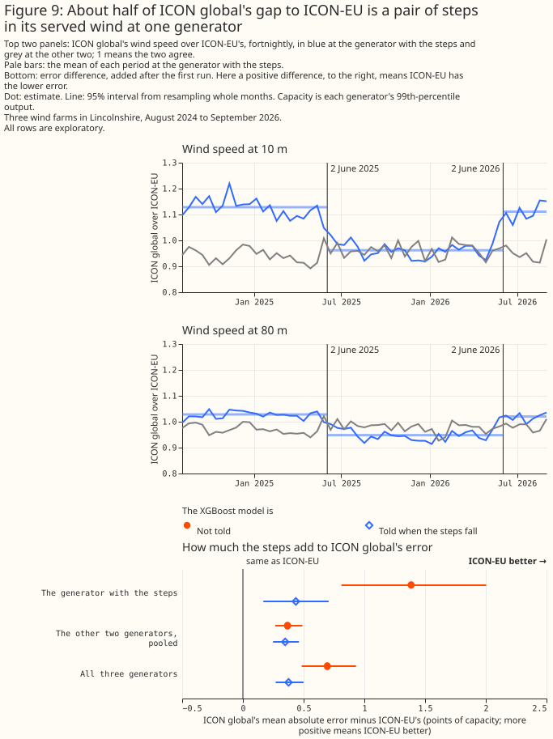
The steps may belong to the archive rather than to ICON global, and their cause is not identified. The steps do not come from this study's choice of land cell, because at the generator with the steps ICON global's nearest cell is the land cell. At the generator where ICON global's nearest cell is influenced by the sea, the same two dates change how that cell's 10 m speed compares with the nearest land cell's: about 30% faster before June 2025 and after June 2026, and about 3% faster between. A change that appears in two neighbouring cells on the same dates and reverses a year later could come from how the archive serves ICON global's grid cells as well as from the weather model.
Against ERA5, ICON global is behind only from October to March and at the generator with the steps. Across the window ICON global is 0.38 points behind ERA5 [0.09, 0.70], with only 3 of 5 folds agreeing. From October to March ICON global is 0.85 points behind [0.38, 1.31], and from April to September the difference is not statistically significant at the 5% level (ICON global 0.03 points ahead [−0.18, +0.21]). At the two generators without the steps, ICON global's difference from ERA5 is not statistically significant at the 5% level either. With both XGBoost models told when the steps fall, ICON global is 0.07 points behind ERA5 [−0.09, +0.23].
ICON global's longer served lead may explain a smaller part of its gap to ICON-EU. ICON global runs every 6 hours, so half its hours are served 3 to 5 hours after the run, where ICON-EU's are 0 to 2 hours. On the hours where the two leads are equal ICON global is 0.63 points behind ICON-EU [0.41, 0.86], against 0.76 points [0.55, 1.00] on the others. This study did not test that difference, and the split also divides the hours of the day.
At the two generators without the steps ICON global is still 0.33 and 0.40 points behind ICON-EU. ICON-EU is a 6.5 km weather model nested inside ICON global's own 13 km run, so grid spacing is the most obvious difference between the two, though this study does not isolate it. At one of those two generators ICON global is read from a land cell further away than its nearest cell, which may handicap ICON global there.
UKV's lead over ERA5 grew from 2025 to 2026, while ICON-EU's and ICON-D2's did not change by a statistically significant margin
UKV's lead over ERA5 is 0.46 points in 2025 and 0.75 points in 2026, a change of 0.30 points after rounding, and the change is statistically significant at the 5% level. Each comparison below is exploratory, and each year's interval comes from resampling that year's months alone, restricted to January to September so a partial 2026 compares against the same months of the earlier years rather than against their full 12 months. Each year's interval rests on 9 months, so the intervals are likely too narrow.
UKV, ICON-EU, and ICON-D2 each beat ERA5 in both years. UKV beat ERA5 by 0.46 points [0.22, 0.64] in 2025 and by 0.75 points [0.59, 0.93] in 2026. The larger 2026 figure is in step with UKV's January 2026 upgrade, and lines up with the post-upgrade contrast in UKV and ICON-D2 describe past wind best, 0.79 points [0.63, 0.97] since the upgrade against 0.53 points [0.29, 0.72] over the same months a year earlier. ICON-EU beat ERA5 by 0.49 points [0.33, 0.66] in 2025 and by 0.36 points [0.20, 0.52] in 2026. ICON-D2 beat ERA5 by 0.77 points [0.60, 0.97] in 2025 and by 0.71 points [0.59, 0.83] in 2026. Resampling each year's months independently of the other's, so the test covers the change itself rather than each year on its own, UKV's lead over ERA5 grew by 0.30 points [0.04, 0.58] from 2025 to 2026; ICON-EU's changed by −0.12 points [−0.36, +0.10]; ICON-D2's by −0.06 points [−0.29, +0.15]. Only UKV's change is statistically significant at the 5% level. August to December 2024 holds 5 months, too few for an interval even before the January-to-September restriction, and is left out. Figure 10 draws each year's leads and the change between the years.
ICON global's two years are not comparable with each other. The pair of steps in ICON global's served wind at one generator, described in About half of ICON global's gap to ICON-EU is a pair of steps in its served wind, falls in early June 2025 and early June 2026, so each year holds part of the stepped period. In neither year is ICON global's difference from ERA5 statistically significant at the 5% level.
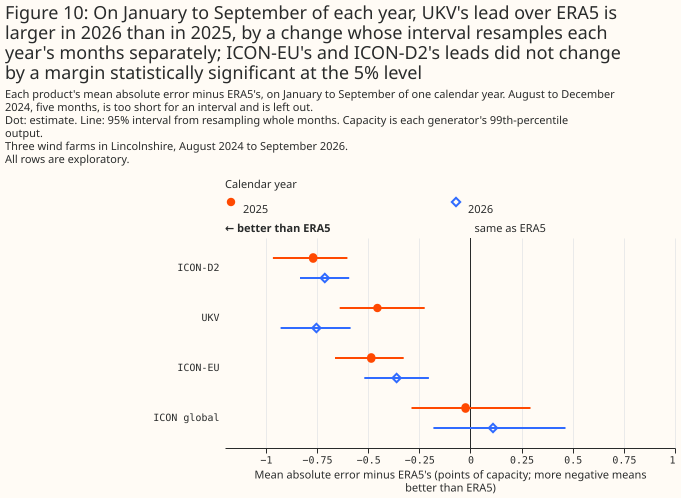
The power hour, the zero-hour rule, and UKV's hub height each move a result by at most 0.28 points
Three method choices were each checked against an alternative after the first run, and none moves an error or a contrast by more than 0.28 points. The alternatives are UKV's 80 m wind in place of its 100 m wind, the solar study's power hour, and keeping every hour that holds an exactly-zero half-hour.
UKV's 80 m wind scores 0.02 points worse than UKV's 100 m wind, and ICON-D2's lead over UKV stays statistically significant. A check gives the XGBoost model UKV's 80 m wind instead, and scores 0.02 points worse (6.85% against 6.83%), on the main row set. ICON-D2 minus UKV is −0.158 points [−0.274, −0.044] with UKV's 80 m wind, and ICON-EU minus UKV is +0.106 points [−0.005, +0.211].
The solar study's power hour moves UKV's error and one contrast by 0.24 to 0.28 points. The solar study's hour, ending at T, raises UKV's error by 0.28 points, in a check added after the first run. With that hour, ICON-EU minus UKV is −0.115 points [−0.212, −0.017], against +0.126 points [+0.009, +0.232] with the centred hour, and the largest change in any reported contrast's estimate is 0.24 points.
The zero-hour rule moves no contrast by more than 0.031 points. Dropping no hours at all moves no contrast by more than 0.031 points, in a check added after the first run.
ICON-DREAM-EU does not beat ERA5, and trails ICON-EU
Of the two planned contrasts, ICON-DREAM-EU against ICON-EU is statistically significant at the 5% level and ICON-DREAM-EU against ERA5 is not. ICON-DREAM-EU trails ICON-EU, DWD's operational ICON model over Europe at the same 6.5 km grid spacing, by 0.34 points [0.27, 0.41] at the primary hyperparameter setting and 0.34 points [0.28, 0.39] at the second. ICON-DREAM-EU does not consume ICON-EU's output: it is DWD's own reanalysis run of the ICON model family, with its own data assimilation, nested inside a 13 km global run. Like ERA5, ICON-DREAM-EU runs one fixed version of its weather model over its whole record so that the record is consistent over time, while ICON-EU is DWD's operational run. This section's two planned contrasts ask whether a reanalysis built on a newer model beats ERA5, and whether it improves on ICON-EU, the operational run sharing its grid spacing.
In exploratory contrasts, the five original products still rank much as UKV and ICON-D2 describe past wind best found, on this shorter row set, with one exception. ICON-EU still beats ERA5, by 0.340 points [0.193, 0.479], close to the 0.31 points found there. ICON-D2 still beats ICON-EU, by 0.240 points [0.164, 0.317], close to the 0.26 points found there. UKV's small lead over ICON-EU found there (0.13 points [0.01, 0.23], statistically significant at the 5% level) shrinks here to 0.086 points [−0.028, +0.193], not statistically significant at the 5% level. Limitations explains why refitting on this row set's own folds can move a contrast by a few hundredths of a point.
ICON-DREAM-EU's error is statistically indistinguishable from ERA5's. Across the window ICON-DREAM-EU is 0.001 points behind ERA5 [−0.119, +0.131], not statistically significant at the 5% level. At the second hyperparameter setting ICON-DREAM-EU is 0.047 points ahead of ERA5 [−0.080, +0.163], also not statistically significant; both estimates sit close to zero. Figure 1 draws the ICON-DREAM-EU block's errors and Figure 2 its contrasts. In an exploratory paired contrast, ICON-DREAM-EU beats ICON global, the lowest-ranked of the other five products, by 0.351 points [0.137, 0.592].
Over the window the two pages share, neither finds ICON-DREAM-EU statistically distinguishable from ERA5, and both find it behind ICON-EU. The past-solar page finds ICON-DREAM-EU ahead of ERA5 by 0.32 points [0.12, 0.52] over its longer window, back to September 2019, but by 0.16 points [−0.09, +0.38] since August 2024, the window shared with the past-solar page, not statistically significant at the 5% level. On both pages ICON-DREAM-EU trails ICON-EU: by 0.38 points for solar and by 0.34 points here.
ICON-DREAM-EU trails ICON-EU by 0.34 points at both hyperparameter settings. At the primary setting the gap is 0.340 points [0.266, 0.405], and at the second setting 0.338 points [0.282, 0.391]; both are statistically significant at the 5% level, with every fold agreeing.
The rest of this section is exploratory: chosen after the results were seen, not named in the plan.
Part of ICON-DREAM-EU's gap to ICON-EU comes from its 3-hour forecasts: dropping the hours where ICON-DREAM-EU is at step 3 and ICON-EU at T+0 narrows the gap to 0.28 points [0.20, 0.36]. ICON-EU's own error against ERA5 is flat by lead: −0.341 points at T+0, −0.346 points at 1 hour, and −0.332 points at 2 hours. ICON-DREAM-EU's error against ERA5 is not: it moves from −0.108 points at step 1 to +0.121 points at step 3 (the next paragraph below sets out every step). So restricting to equal-lead hours narrows the gap between ICON-DREAM-EU and ICON-EU by dropping ICON-DREAM-EU's worst step, not by dropping one of ICON-EU's better leads. On the two hours in three where the two products' served leads match (33,344 rows), ICON-DREAM-EU trails ICON-EU by 0.279 points [0.197, 0.356] at the primary setting and 0.271 points [0.208, 0.333] at the second, against 0.340 and 0.338 points on every hour. So dropping the step-3 hours removes about 0.06 of the 0.34-point gap (no interval computed for that difference, and a change of that size sits within the refit noise that Limitations describes), and ICON-DREAM-EU still trails ICON-EU at every matched lead. On the same equal-lead hours ICON-DREAM-EU is 0.059 points ahead of ERA5 [−0.091, +0.194] at the primary setting and 0.113 points ahead [−0.036, +0.246] at the second, neither statistically significant at the 5% level.
ICON-DREAM-EU's own gap grows with its served lead. Split by step, ICON-DREAM-EU trails ICON-EU by 0.238 points [0.151, 0.325] at step 1, 0.321 points [0.226, 0.409] at step 2, and 0.462 points [0.371, 0.547] at step 3, each statistically significant at the 5% level. Against ERA5 the pattern is similar: ICON-DREAM-EU is 0.108 points ahead [−0.055, +0.243] at step 1, not statistically significant, 0.011 points ahead [−0.144, +0.162] at step 2, also not statistically significant, and 0.121 points behind [+0.009, +0.230] at step 3, statistically significant at the 5% level. Step 3 is ICON-DREAM-EU's longest lead in its own cycle. Against ICON-EU the step-1 and step-3 intervals do not overlap; against ERA5 they do, and no test of the step-1-to-step-3 change was run, so the trend against ERA5 is suggestive only.
Giving the XGBoost model two more ICON-DREAM-EU heights does not change either planned answer: the three-level arm still trails ICON-EU, and still does not beat ERA5. Giving the XGBoost model two more height levels — about 42 m and 167 m — alongside level 72 improves on the primary, single-level arm by 0.044 points [0.016, 0.074], statistically significant at the 5% level. Compared directly, the three-level arm still trails ICON-EU, by 0.296 points [0.222, 0.365], statistically significant at the 5% level with every fold agreeing, and is 0.043 points ahead of ERA5 [−0.079, +0.157], not statistically significant, with only 2 of 5 folds agreeing.
Part of the three-level arm's apparent gain may belong to its extra feature columns rather than its extra heights. Every arm here that includes the three-level arm carries two more feature columns than the arm it is compared against. This repository's own measurement puts the effect of extra columns alone at up to about 0.4% of mean absolute error even at this study's column-subsampling setting — about 0.03 points on this page's error scale, the same size as the refit noise that Limitations describes. So part of the three-level arm's apparent gain, in every comparison above, may belong to the extra columns rather than to the extra heights, and the benefit of the extra heights themselves is not established.
Direction adds skill for ICON-DREAM-EU too, in line with every other product tested. Giving the XGBoost model ICON-DREAM-EU's direction and 10 m speed alongside its hub-height speed, rather than the hub-height speed alone, cuts its error by 0.305 points [0.204, 0.415]. The same addition cuts ERA5's error by 0.616 points [0.454, 0.789], UKV's by 0.388 points [0.280, 0.501], ICON-D2's by 0.239 points [0.137, 0.344], ICON-EU's by 0.367 points [0.245, 0.496], and ICON global's by 0.541 points [0.377, 0.744].
ICON-DREAM-EU's gap to ICON-EU is consistent across all three generators, but its comparison with ERA5 is not. Against ICON-EU, ICON-DREAM-EU trails by 0.403 points [0.324, 0.484] at Generator W1, 0.293 points [0.144, 0.438] at Generator W2, and 0.326 points [0.160, 0.462] at Generator W3, each statistically significant at the 5% level. Against ERA5, ICON-DREAM-EU trails by 0.164 points [0.049, 0.285] at Generator W1, a gap statistically significant at the 5% level, but neither Generator W2 (0.225 points ahead [−0.002, +0.449], not statistically significant) nor Generator W3 (0.074 points behind [−0.083, +0.238], not statistically significant) shows a difference distinguishable from zero.
At Generator W2, ICON-DREAM-EU's lead over ERA5 is not statistically significant at the 5% level, and every leading product's lead over ERA5 is also larger there than across all three generators. At Generator W2 every one of the three leading original products beats ERA5 by more than it does across all three generators on this section's row set: ICON-EU by 0.518 points, UKV by 0.775 points, and ICON-D2 by 0.803 points, each statistically significant at the 5% level, against 0.340 points [0.193, 0.479], 0.425 points [0.226, 0.600], and 0.579 points [0.405, 0.742] across all three generators on this section's row set. The shift at Generator W2 is 0.178 points for ICON-EU, 0.350 for UKV, and 0.224 for ICON-D2, and 0.226 points for ICON-DREAM-EU, which is larger than the shifts of ICON-EU and ICON-D2 and smaller than UKV's.
Neither planned contrast's size changed by a margin statistically significant at the 5% level from 2025 to 2026, in a comparison restricted to January to August of each year so a partial 2026 compares against the same months of 2025. Against ERA5, ICON-DREAM-EU was 0.075 points ahead [−0.097, +0.273] in 2025 and 0.036 points ahead [−0.132, +0.217] in 2026 (signs flipped so ahead is positive), a change of −0.039 points [−0.297, +0.212], not statistically significant. Against ICON-EU, the gap was 0.416 points [0.312, 0.498] in 2025 and 0.376 points [0.309, 0.430] in 2026, both statistically significant, a change of −0.041 points [−0.145, +0.080], not statistically significant.
UKV beats HRES and ENS day 0, and HRES's lead over ERA5 depends on the training design
In the planned contrasts, UKV beats HRES and ENS day 0, and HRES beats ERA5
UKV beats HRES by 0.20 points and ENS day 0 by 0.41 points, and HRES beats ERA5 by 0.27 points, on 43,555 farm-hours from December 2024, in the section's three planned contrasts. A difference below is the first-named product's error minus the second's, in points of capacity, so a positive difference means the first-named product's error is larger. HRES minus UKV is +0.20 points [+0.06, +0.33], with 4 of 5 folds agreeing. ENS day 0 minus UKV is +0.41 points [+0.25, +0.58], with all 5 folds agreeing. HRES minus ERA5 is −0.27 points [−0.40, −0.12], with all 5 folds agreeing. The three contrasts share their 22 calendar months. The third contrast depends on the training design, as the paragraphs below on the era cut show.
Each product's own error, in order, is ICON-D2 6.67%, UKV 6.88%, ICON-EU 7.04%, HRES 7.08%, ENS day 0 7.29%, ERA5 7.35%, and ICON global 7.68% of capacity. Every product on the ECMWF row set is refitted on the same 43,555 farm-hours, so these errors differ from the errors reported earlier on this page. Own intervals overlap widely, for example HRES's [6.28, 8.04] and ENS day 0's [6.52, 8.21], because every product's error rises and falls with the month. The paired differences are the test. No paired contrast between ICON-D2 and either ECMWF product was computed, so this section ranks ICON-D2 against them by own error alone.
In exploratory contrasts on these rows, UKV minus ERA5 is −0.47 points [−0.64, −0.29] and ENS day 0 minus HRES is +0.20 points [+0.07, +0.33]. Figure 1 draws each product's own error on the ECMWF row set, and Figure 2 draws the ECMWF block's three planned contrasts.
ENS day 0 minus ERA5 is −0.07 points [−0.19, +0.06], so this section does not resolve whether ENS day 0 differs from ERA5. The interval bounds the difference. An ENS error from 0.19 points below ERA5's to 0.06 points above it is not excluded, and the interval does not show that the two are equal. The contrast is exploratory.
The planned contrasts keep their sign under other training designs, and HRES's lead over ERA5 depends on the era cut
The three planned contrasts keep their sign under five fold designs, one row subset, and the second hyperparameter setting, and their size depends on the training design. Four alternative fold designs and one row subset were added after the first results, so they are exploratory, and the first row of Figure 11 is the study's own design, the planned contrast. The six rows of Figure 11 are the study's design; the same losses without the rows of May 2026 (the row subset); three eras with no fold rotation; two UKV eras, as in the rest of the page; the study's folds with an era code of two values; and an extra era cut at IFS Cycle 50r1 with May 2026 dropped. Across them, HRES minus UKV runs from +0.15 to +0.21 points, ENS day 0 minus UKV from +0.34 to +0.43, and HRES minus ERA5 from −0.24 to −0.29. Among the two positive contrasts, the lowest lower bound is HRES minus UKV's under the two-valued era code, +0.15 points [+0.02, +0.28]. An extra era cut at IFS Cycle 50r1 moves none of the three planned contrasts, nor ENS day 0 minus HRES, by more than 0.04 points from the study's design (compared on the rows without May 2026).
The three planned contrasts also keep their sign at the second hyperparameter setting, and none of the three intervals adjusted for three contrasts includes zero. At the second hyperparameter setting the three differences are +0.21 points [+0.06, +0.36], +0.43 points [+0.28, +0.58], and −0.29 points [−0.42, −0.13]. At the primary setting, intervals adjusted for the three contrasts (98.33%, exploratory) are [+0.03, +0.36], [+0.21, +0.61], and [−0.42, −0.09], and none includes zero. The adjustment covers only these three contrasts, and each tail of these adjusted intervals rests on about 17 of the 2,000 resamples.
The three designs that train on the rows from 12 August 2024 and score only the rows from December 2024 span a wider range. The two without an era cut at IFS Cycle 49r1 give larger differences: HRES minus UKV is +0.33 and +0.39 points, and ENS day 0 minus UKV is +0.49 and +0.54. The third, with an extra era cut at 1 December 2024, gives +0.17 and +0.39 points, inside the range of the six designs above. Across all nine designs scored on the rows from December 2024, HRES minus UKV runs from +0.15 to +0.39 points, ENS day 0 minus UKV from +0.34 to +0.54, and HRES minus ERA5 from −0.29 to −0.06. The sign of the first two contrasts is robust, and their size depends on the training design. HRES minus ERA5 is not statistically significant at the 5% level in the two designs that train on August to November 2024 without an era cut. The nine designs share their months and their weather, so they are not nine independent confirmations.
The fold designs differ in how many calendar months they leave without training rows, and the count is printed for each. A cell is one farm, one fold, and one calendar month that occurs in two years. The report counts the cells whose held-out month has no training row from any other fold. The study's design leaves 0 cells, as do the study's folds with a two-valued era code and the design with an extra cut at IFS Cycle 50r1. Three eras with no fold rotation leave 6 cells (July and September), and two UKV eras, the rest of the page's design, leave 12 (February, April, May, and June). On the longer row set, the horizons page's folds before their rotation leave 6 (June and July), and the other two long-row designs leave 0. In the study's design the covered cell with the fewest training rows holds 229 training rows, for September at one farm, where 680 rows are scored.
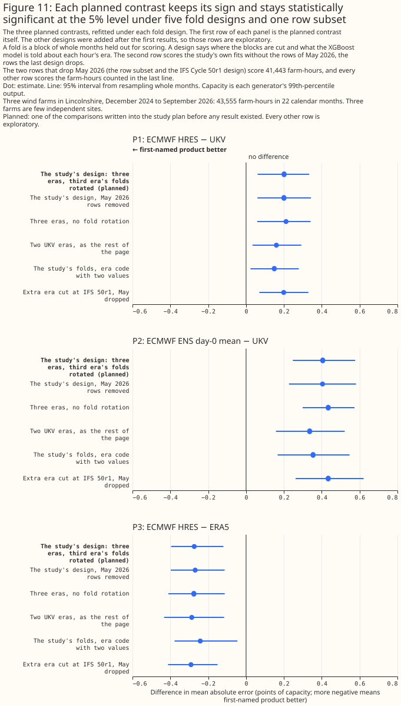
The ENS horizons page's figure for ENS day 0 against ERA5 agrees with this section's because its wind rows start on 1 December 2024 and its folds cover every calendar month that occurs in two or more years, and the era cut moves the result more than the fold numbering does. This section finds −0.07 points [−0.19, +0.06] on 43,555 farm-hours from 1 December 2024. The horizons inputs hold no power for 466 of those farm-hours, 299 in November 2025 and 167 in June 2026, so the horizons page scores fewer farm-hours. Three refits on this page's own rows from 12 August 2024 (50,734 farm-hours in 26 calendar months) show what the era cut and the fold numbering change when the rows begin before the upgrade:
- The horizons page's folds before their rotation. The first refit uses the fold numbering the horizons page used before it rotated the post-upgrade folds, which does not cut at IFS Cycle 49r1, and gives +0.16 points [+0.01, +0.31] for this study's ENS wind and +0.17 points [+0.03, +0.32] for the horizons page's own combination of upsampling techniques. Scoring only the rows from 1 December 2024 under those folds gives +0.10 points [−0.05, +0.25].
- Two eras, rotated folds. The second refit keeps the two eras and rotates the folds of the second era, and gives +0.147 points [−0.005, +0.302] on all rows and +0.08 points [−0.07, +0.25] from December. For the horizons page's own combination the second refit gives +0.16 points [+0.01, +0.30] on all rows, which stays statistically significant at the 5% level.
- One era cut at 1 December 2024. The third refit adds one era cut at 1 December 2024, and gives +0.00 points [−0.12, +0.13] on all rows and −0.01 points [−0.14, +0.14] from December.
The horizons page's folds before their rotation leave 6 cells without training rows (June and July), and the other two designs leave 0. These refits are exploratory, added after the first results.
Paired differences between the designs separate the era cut from the fold numbering. Each figure below is one design's contrast minus another design's contrast on the same rows and seeds, from the saved losses with nothing refitted, and is exploratory. For ENS day 0 minus ERA5 with this study's ENS wind, rotating the folds changes the contrast by −0.01 points [−0.05, +0.03] on all rows and −0.02 points [−0.06, +0.03] from December. Adding the era cut changes it by −0.15 points [−0.27, −0.04] on all rows and −0.08 points [−0.18, −0.00] from December. Both changes together, the era cut with rotated folds against the horizons page's folds, change it by −0.16 points [−0.27, −0.06] on all rows. Rotating the folds alone therefore moves ENS day 0 minus ERA5 by no margin that is statistically significant at the 5% level, and the era cut moves it by a statistically significant margin on all rows. ENS day 0 minus ERA5 is statistically significant only without an era cut and only on all rows. A difference between a significant and a non-significant interval, such as +0.147 points [−0.005, +0.302] against +0.16 points [+0.01, +0.31], is not a difference between the designs.
The era cut also changes the fold layout, so its effect and the effect of the fold numbering are not fully separable. The cut changes the fold layout because the first era becomes its own set of folds. On the ECMWF row set (43,555 rows), the fold layout and the era coding alone move HRES minus UKV across a range of +0.15 to +0.21 points and ENS day 0 minus UKV across +0.34 to +0.43, so the fold layout has an effect of its own.
In exploratory refits, HRES's lead over ERA5 is no longer statistically significant at the 5% level when the XGBoost model trains across IFS Cycle 49r1 without an era cut. HRES minus ERA5 is +0.05 points [−0.14, +0.26] on all rows from 12 August 2024 with the horizons page's folds before their rotation, and −0.06 points [−0.24, +0.15] on the rows from December. With the two eras and rotated folds, HRES minus ERA5 is +0.03 points [−0.18, +0.26] on all rows and −0.09 points [−0.27, +0.14] from December. With the extra era cut, HRES minus ERA5 is −0.19 points [−0.32, −0.04] on all rows and −0.23 points [−0.37, −0.06] from December. Paired, rotating the folds changes HRES minus ERA5 by −0.02 points [−0.07, +0.02] on all rows and −0.03 points [−0.08, +0.02] from December, and adding the cut changes it by −0.23 points [−0.39, −0.08] and −0.15 points [−0.28, −0.03]. HRES's advantage over ERA5 therefore depends on the era cut, not on the fold numbering. On these rows, a training history risks losing HRES's advantage over ERA5 if it reads HRES across a cycle change without telling the XGBoost model which side each hour falls on. Figure 12 draws how far the era cut and the fold rotation each move ENS day 0 minus ERA5 and HRES minus ERA5.
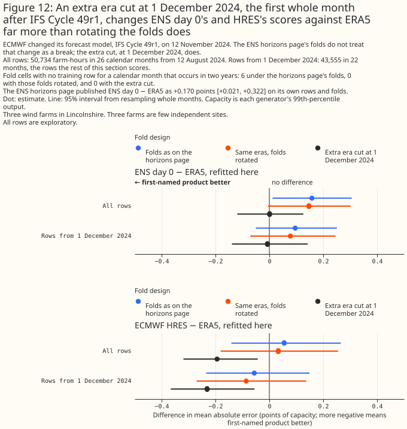
ENS day 0's and HRES's 10 m wind speeds fall against ERA5's at IFS Cycle 49r1
The mean 10 m wind speeds of ENS day 0 and HRES fall against ERA5's between October and November 2024, and UKV's does not fall. ENS day 0's ratio to ERA5 is 0.97 in August and September 2024 and 0.94 in October, and it stays between 0.90 and 0.93 in every month from November 2024. HRES's is 0.89 in August 2024, 0.86 in September, and 0.85 in October, and it stays between 0.78 and 0.83 from November 2024. UKV's ratio is 0.76 in August 2024, 0.75 in September, 0.71 in October, and 0.77 in November, so UKV's own ratio moves by 0.06 between October and November. A month-to-month change alone is weak evidence. A comparison that holds the season fixed is stronger evidence, although it sets one year against one year. Pooled over August to October, ENS day 0's ratio is 0.96 in 2024 and 0.91 in 2025, HRES's is 0.86 and 0.80, and UKV's is 0.74 in both years, and UKV's stable ratio is what rules out a step in ERA5. Figure 13 draws each product's monthly ratio to ERA5's 10 m wind speed.
The step in ENS day 0's 10 m wind points to the weather model rather than to Open-Meteo's archive. ENS day 0 is served by Dynamical.org's archive, independently of Open-Meteo's. ECMWF's Newsletter 181 describes IFS Cycle 49r1 as including "a revision of the diagnostic 10 m wind calculation, which removes a limiter and modifies the blending height, leading to reduced 10 m wind biases". The step is consistent with the cycle change, and this study does not establish that the cycle change caused the step. Neither that newsletter article nor ECMWF's implementation page, as read for this study, mentions 100 m wind.
At 100 m, the height the XGBoost models are given, the fall against ERA5 is smaller and gradual, and HRES's is larger than ENS day 0's. HRES's ratio to ERA5 is 0.97 in August 2024, 0.96 in September, 0.95 in October, 0.93 in November, and 0.91 in December. ENS day 0's is 0.99 in August and September 2024 and 0.98 in October, and stays between 0.94 and 0.98 from November 2024. The table below splits each product's data at the first hour of IFS Cycle 49r1 (06 UTC on 12 November 2024 for HRES, 00 UTC on 13 November 2024 for ENS day 0), and splits UKV, which the cycle does not touch, at HRES's hour.
| Product | 100 m ratio before | 100 m ratio after | 10 m ratio before | 10 m ratio after |
|---|---|---|---|---|
| HRES | 0.96 | 0.91 | 0.86 | 0.80 |
| ENS day 0 | 0.99 | 0.96 | 0.96 | 0.91 |
| UKV | 0.97 | 0.99 | 0.74 | 0.77 |
Over the 28 days on each side of the split, HRES's 100 m ratio falls from 0.96 to 0.91 and ENS day 0's from 0.98 to 0.97. This study does not establish why HRES's hub-height step is larger than ENS day 0's, and a change in Open-Meteo's archive is possible. These are exploratory ratios of means with no interval.
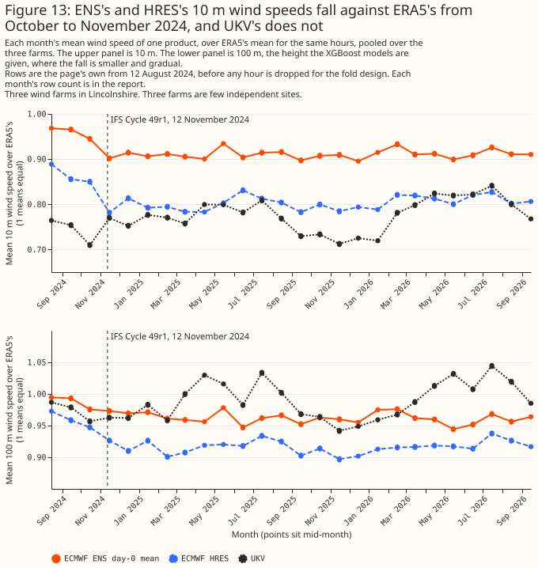
The choice of ENS interpolation moves ENS day 0's error by at most 0.02 points
The choice of ENS interpolation does not move ENS day 0's error by a margin statistically significant at the 5% level. Each of the ENS horizons page's three alternative interpolations moves ENS day 0's error by no more than 0.02 points from the planned combination: +0.02 points [−0.01, +0.04], −0.01 points [−0.05, +0.03], and +0.00 points [−0.03, +0.04]. These are exploratory contrasts.
ENS day 0's gap to UKV is larger in the later hours of the day, and the contrasts differ between farms and periods
ENS day 0's gap to UKV and HRES is larger in the later hours of the day, as is ERA5's gap to UKV, and the split cannot apportion the widening between ENS lead and time of day. Splitting the scored hours by label hour, an exploratory comparison, ENS day 0 minus UKV is +0.11 points [−0.06, +0.27] for labels 00 to 08 UTC (16,140 farm-hours) and +0.60 points [+0.38, +0.84] for labels 10 to 23 UTC (25,604 farm-hours). ENS day 0 minus HRES is +0.01 points [−0.10, +0.13] for labels 00 to 08 UTC and +0.34 points [+0.16, +0.52] for labels 10 to 23 UTC. Label 09 is dropped. ERA5, an analysis with no lead, shows the same pattern against UKV: UKV minus ERA5 is −0.26 points [−0.44, −0.07] for labels 00 to 08 UTC and −0.61 points [−0.79, −0.40] for labels 10 to 23 UTC. HRES minus UKV is +0.09 points [−0.09, +0.27] and +0.26 points [+0.11, +0.40]. Against ERA5, ENS day 0 minus ERA5 is −0.15 points [−0.30, +0.00] and −0.01 points [−0.18, +0.18].
The change between the halves, late minus early, has its own interval. Both halves hold the same calendar months, so one draw of months and one fitting seed serves both. ENS day 0 minus UKV changes by +0.49 points [+0.24, +0.76], ENS day 0 minus HRES by +0.33 points [+0.14, +0.50], ENS day 0 minus ERA5 by +0.14 points [−0.07, +0.39], UKV minus ERA5 by −0.35 points [−0.50, −0.18], HRES minus UKV by +0.17 points [−0.01, +0.35], and HRES minus ERA5 by −0.18 points [−0.33, −0.01]. The change in ENS day 0 minus ERA5 is not statistically significant at the 5% level, and the change in UKV minus ERA5, which involves no ENS lead, is. Part of the widening of ENS day 0's gap to UKV therefore does not come from ENS lead. This study cannot attribute that part to time of day, because the controls are not clean: HRES's served lead varies with the UTC hour before 1 October 2025, and ERA5's assimilation windows change at 09 to 10 UTC and 21 to 22 UTC, beside the split. The split mixes four effects: ENS lead (0 to 8 hours against 10 to 23 hours from the 00 UTC run), time of day, the growing smoothing of an ensemble mean as the members' spread widens with lead, and the smoothing from interpolating 3-hourly steps to hourly. In contrasts involving HRES, HRES's served lead before 1 October 2025 is mixed in as well. The split is not a test of whether ENS could be read in time. Figure 14 draws the split.
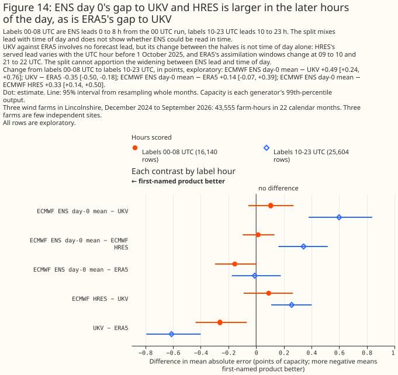
HRES minus ERA5 is statistically significant at the 5% level at one farm of three, Generator W2, and only one pair of farms differs in it. HRES minus ERA5 is −0.54 points [−0.72, −0.35] at Generator W2, −0.05 points [−0.21, +0.11] at Generator W1, and −0.22 points [−0.51, +0.10] at Generator W3. Between farms, W2 minus W1 is −0.49 points [−0.69, −0.26], W2 minus W3 is −0.32 points [−0.63, +0.02], and W3 minus W1 is −0.17 points [−0.54, +0.22]. Of the nine between-farm differences in the three planned contrasts, two are statistically significant at the 5% level: that one, and ENS day 0 minus UKV between W2 and W3, at −0.37 points [−0.65, −0.10]. HRES minus UKV is +0.26 points [+0.15, +0.37] at Generator W1, +0.02 points [−0.23, +0.26] at Generator W2, and +0.33 points [+0.05, +0.61] at Generator W3. ENS day 0 minus UKV is +0.38 points [+0.16, +0.60] at Generator W1, +0.24 points [−0.03, +0.50] at Generator W2, and +0.61 points [+0.43, +0.79] at Generator W3. Per-farm rows are exploratory, and the three farms share their weather, so they are not independent replications. Figure 7b draws the three planned contrasts at each farm.
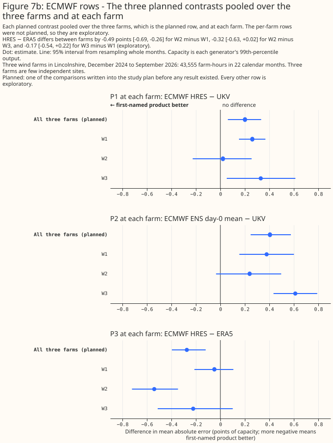
The period splits do not settle which difference drives the gap between HRES and UKV. HRES minus UKV is +0.10 points [−0.13, +0.31] before 1 October 2025 (10 calendar months, 20,703 farm-hours) and +0.29 points [+0.14, +0.44] from that date (12 calendar months, 22,852 farm-hours), although HRES's lead is shorter from that date. A shorter lead would be expected to narrow the gap, and the two periods also differ in season and archive source. The change between the periods, resampling each period's own months, is +0.18 points [−0.08, +0.44], not statistically significant at the 5% level. The later period also contains UKV's January 2026 upgrade. UKV's own lead over ERA5 grows between the two periods, from −0.32 points [−0.57, −0.02] to −0.61 points [−0.80, −0.43], a change of −0.29 points [−0.64, +0.03] that is also not statistically significant. This study therefore does not compare the size of the two changes.
The split at IFS Cycle 50r1 leaves too few months for a usable interval. The split leaves 5
calendar-month labels from 12 May 2026, so the report marks the split's change intervals too few
months, and those intervals under-cover.
One nearby 10 m weather station trails ERA5's 10 m wind on its own, and lowers UKV's error when added to it
In the two planned contrasts, the nearest station's wind gives a larger error than ERA5's 10 m wind, and lowers UKV's error against a control with the same number of columns. S1, the nearest station minus ERA5's 10 m wind, is 0.99 points [0.59, 1.45], with all 5 folds agreeing, and 1.02 points [0.61, 1.45] at the second hyperparameter setting. S2, UKV plus the station minus UKV plus its own 80 m wind, is −0.64 points [−0.81, −0.46] with all 5 folds agreeing, and −0.60 points [−0.73, −0.46] at the second setting.
Both planned contrasts stay statistically significant at the 5% level after adjusting for the four planned intervals and, at both settings, under two intervals that do not treat months as independent. Adjusted for the four planned intervals, at the 98.75% level, S1 is [0.51, 1.59] and S2 is [−0.87, −0.43]. At the main setting, S1's interval is [0.15, 1.91] from the 5 per-fold differences and [0.53, 1.48] from the 17 per-month differences, and S2's interval is [−0.85, −0.39] from the per-fold differences and [−0.83, −0.45] from the per-month differences. S1's fold-level interval is about twice as wide as its bootstrap interval. Each interval rests on 34,156 farm-hours in 17 calendar months. Figure 1 draws the weather-station block's errors, and Figure 2 its two planned contrasts.
The nearest station has the largest own error of the 11 arms on the weather-station row set, at 9.14% of capacity [7.98, 10.40], against 8.15% [7.29, 9.09] for ERA5's 10 m wind. ICON global, at 8.35%, has the next largest. S1's 0.99 points is about 12% of ERA5's 10 m error, and S2's 0.64 points is about 8% of the control's error of 7.58%. UKV plus the station has the second smallest own error of the 11 arms, at 6.94% [5.96, 8.08]. The arms' own intervals overlap widely, because every arm's error rises and falls with the month, so the paired differences are the test.
S1 tests how well a 10 m anemometer 6 to 18 km away stands in for the wind at a turbine's hub height, and no planned contrast separates the reasons the anemometer does worse. The station is one point instrument, its reading is a 10-minute mean set against a 60-minute power hour, and its siting, distance, terrain, and rounding to whole knots and 10 degrees all differ from ERA5's smooth 0.25° grid value. The page does not say which of those matters most. This page also did not check whether ERA5 assimilates land-station 10 m wind, which bears on S1 the same way as UKV's assimilation bears on S2.
S1 compares two 10 m speeds, but the two sources' direction columns are at different heights: ERA5's is at 100 m and the station's is at 10 m. ERA5 given only its 10 m speed and 100 m direction is behind ERA5 given its 100 m speed as well by 0.17 points [0.08, 0.26], a comparison of 4 wind columns with 3. Height alone therefore does not explain S1's 0.99 points. Giving each source its speed alone widens the gap: the nearest station's speed alone minus ERA5's 10 m speed alone is 2.48 points [1.88, 3.07], so the station's direction columns recover part of the deficit. Wind usually turns with height, so part of the 21.0 degree mean disagreement between the two sources' directions over the hours that are not calm is expected. Rounding to 10 degrees accounts for at most 5 degrees of that disagreement.
In an exploratory comparison, the difference between the mean of the three nearest stations and ERA5's 10 m wind is not statistically significant at the 5% level. The mean of the three nearest stations' speeds, with the direction of their mean wind vector, has an own error of 8.06% [7.01, 9.24] on the weather-station row set. The mean minus the nearest station alone is −1.09 points [−1.32, −0.87], with all 5 folds agreeing. The mean minus ERA5's 10 m wind is −0.09 points [−0.40, +0.27], and only 2 of 5 folds agree with the sign of that estimate. Both contrasts are exploratory. The interval for the mean minus ERA5's 10 m wind is wide, so the comparison is compatible with a single anemometer carrying most of S1's deficit but does not show that one does.
In exploratory splits, S1 is larger in August to December than in January to July, by 1.28 points [0.69, 1.84], and the split is confounded with which calendar months the XGBoost models trained on. Figure 15 splits S1 by season. From January to July, 7 months and 14,411 farm-hours, S1 is 0.26 points [0.05, 0.46] at the main setting, with 2 of 3 folds agreeing, and not statistically significant at the 5% level at the second, 0.33 points [−0.01, +0.69]. From August to December, 10 months and 19,745 farm-hours, S1 is 1.53 points [0.99, 2.05]. The difference between the two seasons is 1.28 points [0.69, 1.84] at the main setting and 1.19 points [0.57, 1.77] at the second, with each season resampling its own months. The split is confounded with training coverage, because the models that score January to July never trained on those calendar months.
Weighting every calendar month equally gives an S1 of 0.78 points, against 0.99 points with every farm-hour weighted equally. The interval for the 0.78 points is [0.45, 1.22]. The weights are fixed for every resample, so a resample that misses a calendar month is not averaged over fewer than 12 calendar months, and the resampled estimates are not biased by the missing month.
In exploratory per-calendar-month means, S1 is largest from October to December. At the main setting and with no interval, the mean difference in each calendar month runs from 1.83 to 2.48 points in October to December, is 0.71 to 0.73 in February and September, and runs from −0.21 to 0.54 in the other seven months.
In an exploratory split, S1 is larger at Generator W1 than at Generator W2 or W3, and the difference between W2 and W3 is not statistically significant at the 5% level. Figure 7c splits S1 by farm. S1 is 1.70 points [1.13, 2.33] at Generator W1 and 0.94 points [0.41, 1.50] at Generator W2, both statistically significant at the 5% level, and 0.30 points [−0.36, +0.96] at Generator W3, which is not, at either setting. An interval that excludes zero at one farm and not at another does not show that the farms differ, so each difference between farms gets its own interval. W1 minus W3 is 1.40 points [0.63, 2.40] and W1 minus W2 is 0.76 points [0.20, 1.43]. W2 minus W3 is 0.64 points [−0.002, +1.321], so the lower bound is only just below zero. At the second setting, W1 minus W3 is 1.09 points [0.59, 1.70], W1 minus W2 is 0.64 points [0.07, 1.28], and W2 minus W3 is 0.45 points [−0.02, +0.98].
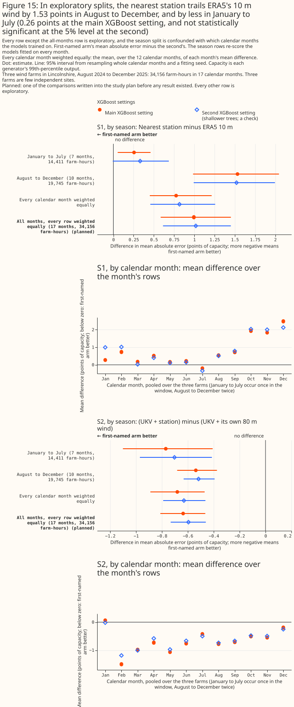
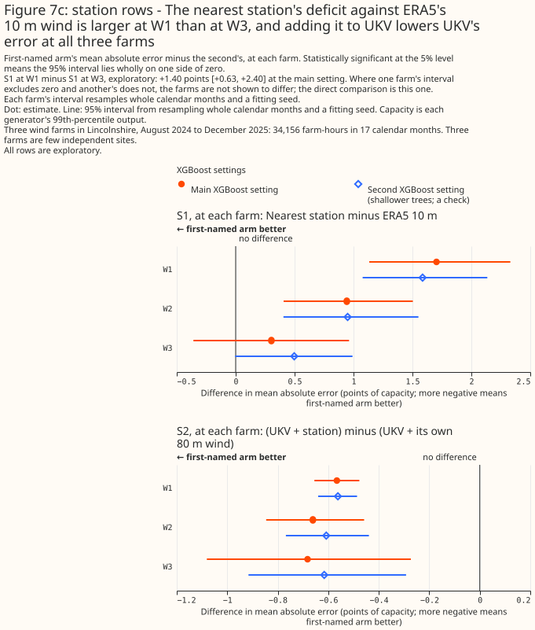
S2 is negative in both halves of the year and at every farm. From January to July S2 is −0.77 points [−1.10, −0.41], from August to December −0.54 points [−0.68, −0.38], and with every calendar month weighted equally −0.68 points [−0.89, −0.47]. At Generator W1 it is −0.57 points [−0.65, −0.48], at Generator W2 −0.66 points [−0.85, −0.46], and at Generator W3 −0.68 points [−1.08, −0.27].
S2's control, UKV plus its own 80 m wind, adds almost nothing to UKV, so the gain in S2 comes from the station's readings and not from the extra columns. UKV plus its own 80 m wind differs from UKV's own error by only −0.04 points [−0.08, −0.01], at 7.58% against 7.62% on the weather-station row set. The three extra UKV columns help slightly, and S2 measures the station's gain over that slight help. UKV plus the station minus UKV alone is −0.68 points [−0.84, −0.52], a comparison of 7 wind columns against 4 (exploratory).
In an exploratory comparison added after the first results, adding ICON-D2's hub-height wind to UKV lowers UKV's error by more than adding the station does. UKV plus ICON-D2's hub-height speed and direction has an own error of 6.76% [5.80, 7.85] on the weather-station row set, and UKV plus the station and UKV plus ICON-D2 each have 7 wind columns. UKV plus the station minus UKV plus ICON-D2 is 0.18 points [0.09, 0.27], and 0.17 points [0.10, 0.24] at the second setting, so the station adds less. ICON-D2 enters at hub height and at leads of 0 to 2 hours, and the station at 10 m and a lead of 0 hours. No contrast here separates the effect of height from the effect of lead. This page did not check whether UKV's own data assimilation already reads surface weather-station reports, which would make part of the station's readings redundant for UKV.
Discussion: what to use
These recommendations rest on three wind farms in one flat part of Lincolnshire, over 2 years, and weigh accuracy against availability and coverage. The take-home bullets in the Summary state each recommendation. The paragraphs below give the reasoning and say what would change each one.
UKV is recommended for historical features because UKV covers all of Great Britain, and ICON-D2's lead over UKV is not statistically significant since UKV's upgrade. UKV covers all of Great Britain and has been 0.41 points ahead of ICON-EU [0.33, 0.49] since its upgrade. ICON-D2's average advantage over UKV has not been statistically significant at the 5% level since that upgrade, so reading ICON-D2 inside its domain adds a seam near ICON-D2's western edge for no measured gain. ERA5 arrives about 5 days late and cannot supply the last few hours at run time. Every figure here scores the archive's freshest run for each hour. At run time the last few hours come from an older run, at a longer lead than any scored here. Scoring the last few hours at the longer lead a live service meets, and scoring ICON-D2 against UKV over more than the 8 months since the upgrade, would test this recommendation directly.
The recommendation for training history rests on how each product compares with ERA5. ICON-D2 is the only product of the five that beats ERA5 in both halves of the year. ICON-EU's advantage over ERA5 is statistically significant at the 5% level only from April to September, so west of ICON-D2's edge this study cannot choose between ICON-EU and ERA5 for October to March. ERA5 is a reanalysis built with one fixed version of its weather model, so it has no weather-model upgrade by design, and its record goes back to 1940. UKV is not recommended, because Open-Meteo's archive of its hub-height wind starts only in August 2024. A training history that switches from ERA5 to an ICON product part-way through has to tell the forecasting model which product each hour comes from, as this study tells the XGBoost model which side of the UKV upgrade each hour falls on. Open-Meteo's ICON archives before August 2024 have not been screened for steps like the pair in ICON global's served wind. ICON-DREAM-EU reaches back to January 2010, and HRES's 9 km grid file starts on 1 January 2017. Besides ERA5, those are the two products on this page whose archives reach before November 2022, but from August 2024 this study cannot distinguish ICON-DREAM-EU from ERA5, so this study gives no reason to prefer ICON-DREAM-EU for wind training history. ICON-DREAM-EU's extra record, from 2010 to 2022, covers years this wind study never scores, so whether ICON-DREAM-EU would beat ERA5 there is untested; the solar page finds ICON-DREAM-EU ahead of ERA5 over its own longer window, back to 2019. DWD publishes ICON-DREAM-EU a month at a time, after each month ends — about 2 to 3 months — so whatever its accuracy it cannot supply the last few weeks a live service needs. Scoring the products over years before August 2024 would test this recommendation directly.
For historical features, UKV beat both ECMWF products in the planned contrasts of the ECMWF results section, on 43,555 farm-hours over 22 calendar months at three farms. At this repository's assumed 09:00 UTC read time only ENS day 0's hours 00 to 08 UTC have passed, so for live historical features ENS day 0 supplies at most the early hours.
For training history, HRES over ERA5 is not established, and ENS day 0 is not distinguished from ERA5. The planned contrast favours HRES over ERA5 on rows from December 2024. Exploratory refits show the advantage is no longer statistically significant at the 5% level when the XGBoost model trains across IFS Cycle 49r1 without an era cut, so this study does not recommend HRES over ERA5 for training history. ENS day 0 is not statistically distinguishable from ERA5 on these rows, and the interval bounds the difference without showing that the two are equal. Dynamical.org's archive of ENS day 0 starts in April 2024. Open-Meteo's HRES archive may reach further back, since the 9 km grid file read for the cross-check starts on 1 January 2017, and any longer record spans many IFS cycles.
Added to UKV, the nearest station gains less than ICON-D2's hub-height wind does, and the yearly MIDAS Open release cannot supply recent months. At three farms over 17 months before UKV's January 2026 upgrade, the nearest station's 10 m wind alone was worse than ERA5's 10 m wind. Added to UKV, the station changed the error by −0.64 points [−0.81, −0.46] against a control with the same number of columns, but adding ICON-D2's hub-height wind instead lowered it by 0.18 points more [0.09, 0.27] (exploratory). Whether a station adds to UKV since its upgrade, or on top of UKV and ICON-D2 together, is untested. MIDAS Open is released once a year, so the archive cannot supply the most recent months.
No figure on this page speaks to capacity estimation or disaggregation, for the reason Scope gives.
Limitations
- Terrain. Issue #826 expected a finer grid to matter most for wind, because terrain shapes hub-height wind. The three generators are onshore in flat country, and two of them share one ERA5 grid cell, so this study cannot speak to terrain, offshore wind, or any other region.
- Three limits are shared by every past-weather study: every accuracy figure is recalibrated per generator, the intervals describe these three generators only, and the comparison is not lead-equal. The Methods page states each. Three wind farms are few independent sites, so every interval on this page describes these farms and this window only.
- Raw accuracy. The products' mean speeds at the served 100 m differ by up to 0.7 m/s, and the ICON products' served 100 m value is Open-Meteo's rescaling of their 120 m wind. The per-generator XGBoost model absorbs such differences.
- Any period before August 2024, and behaviour near the turbines' cut-in speed, which the zero rule under-samples.
- Turbine availability. One generator's output swings for months at a time with availability no product can see, which weakens every contrast there.
- The figures rest on the capacity table as rebuilt in September 2026. Each generator's capacity
is its 99th percentile of output from the
effective_capacitytable, so a rebuilt table would move every figure. - The products are scored at different served leads, so a ranking is partly a lead effect. ERA5 is an analysis, UKV is scored at T+0, its analysis, ICON-D2 and ICON-EU at 0 to 2 hours into the run, and ICON global at 0 to 5 hours. Figure 8 shows the effect for ICON-D2 against UKV. ERA5 arrives about 5 days after the hour, so ERA5 is not usable in the live service, and its place in Figures 1 and 2 is as a reference row.
- Figure 9's step dates were found in the same data it is scored on.
- The intervals rest on 17 to 26 resampled calendar months and 3 fitting seeds, and are not corrected for the number of exploratory contrasts. The main row set resamples 26 calendar months, the ICON-DREAM-EU row set 25, the ECMWF row set 22, and the weather-station row set 17. About 1 in 20 contrasts with no true difference would reach statistical significance at the 5% level by chance, and the contrasts are correlated, so contrasts that reach significance together are not independent evidence.
- Some scored farm-hours fall in a calendar month that the training rows of the same fold do not
cover, and the share differs by row set. The folds are blocks of whole months, so a held-out
calendar month can leave no training row for that calendar month. Each row set has two shares. The
avoidable share is the share of scored farm-hours in a calendar month that occurs in two or more
years and has no training row in any other fold, which a different fold design could avoid. The
unavoidable share is the share in a calendar month that occurs in one year only, which no fold
design can cover. How the comparison was made reports how much
covering the avoidable share moves the planned contrasts.
- Main row set: the avoidable share is 16.4% of the scored farm-hours (8,326 of 50,734), and the unavoidable share is 0.0%.
- ICON-DREAM-EU row set: the avoidable share is 25.1% (12,570 of 50,041), and the unavoidable share is 0.0%.
- ECMWF row set: the avoidable share is 0.0%, and the unavoidable share is 9.4% (4,082 of 43,555), in October and November 2025.
- Weather-station row set: the avoidable share is 0.0%, and the unavoidable share is 42.2% (14,411 of 34,156), in January to July, so the day-of-year column of an XGBoost model that scores one of those months extrapolates.
- ICON-DREAM-EU's own row set. ICON-DREAM-EU does not beat ERA5, and trails
ICON-EU refits every arm, including the
five products above, on ICON-DREAM-EU's own, shorter row set (10 days short of the rest of the
page), so that section's numbers are not directly comparable to the rest of this page's.
wind_products.py's own published fits, not refit, scored on these same 50,041 rows, give 0.119 points [0.000, 0.228] for ICON-EU against UKV, −0.316 points [−0.451, −0.171] for ICON-EU against ERA5, and −0.263 points [−0.334, −0.183] for ICON-D2 against ICON-EU. Refitting on this row set's own folds, rather than reusing the published fit, moves each of those three contrasts by 0.02 to 0.03 points, and moves the ICON-EU-against-UKV contrast across the significance threshold. The month-resampled intervals do not capture that fold-layout variation, so an effect of a few hundredths of a point on this page should be read with that in mind. - The ECMWF section's row set and folds. The section scores 43,555 farm-hours from 1 December 2024, against the page's 50,734 from 12 August 2024, so its errors are not comparable with the rest of the page's. Three fold designs in the section keep cells without training rows on purpose, and the training-design results count them.
- None of the planned ECMWF contrasts isolates which difference between an ECMWF product and its comparator causes the gap. Each contrast mixes served lead, step width, native and served grid, IFS cycle, the source of HRES's archive, and how each value is read. ENS day 0's lead is 0 to 23 hours from the 00 UTC run, its steps are 3-hourly and rebuilt to hourly, and each value is the area-weighted mean of the 0.25° cells that a farm's H3 resolution-5 cell overlaps. ENS day 0's speed is the magnitude of the cell-mean wind vector, which can lower the speed relative to a point read. HRES is a single land cell that Open-Meteo picks. UKV is read at T+0, and ERA5 is an analysis. The ENS-against-HRES contrast also mixes ensemble averaging with a single run, so the contrast's result cannot be attributed to ensemble averaging alone. HRES's archive source changed on 1 October 2025. IFS Cycle 49r1 went live before the main row set starts, and Cycle 50r1 went live inside it, on 12 May 2026. An XGBoost model given HRES or ENS day 0 therefore trains across cycle changes that only the era cuts described in the results partly separate. The study's three eras do not separate Cycle 50r1, and an extra era cut there moves none of the planned contrasts, nor ENS day 0 minus HRES, by more than 0.04 points (the fold-design table).
- ENS day 0's read time. At this repository's assumed 09:00 UTC read time, only ENS day 0's hours 00 to 08 UTC have passed; hours 09 to 23 are still a forecast up to 14 hours ahead. The ENS day-0 scores are therefore past weather delivered late for the early hours, and the best a 00 UTC-only archive offers for the rest.
- HRES's served lead is assembled after the fact. HRES's 0 to 5 hour served lead is assembled after the fact by Open-Meteo, and ECMWF's dissemination schedule lists the 00 UTC HRES steps 0 to 90 at 05:45 to 06:12 UTC, so at run time the freshest HRES hours would be older than the served lead scored here, and HRES's scores are a best case in the same way ENS day 0's early hours are.
- HRES's archive before 1 October 2025 is a backfill from an undocumented source. Open-Meteo's
ecmwf_ifsseries before 1 October 2025 is a backfill from a source Open-Meteo does not document, and the lineage file beside the Previous Runs file records when this study downloaded it. - The exploratory ECMWF rows. Every ECMWF figure other than the three planned contrasts is exploratory. The ENS horizons page's figure for ENS day 0 against ERA5 is not like for like with this section's, as the results explain.
- One anemometer stands in for the wind at a turbine's hub height. The results say nothing about station data in general. The 38 candidate stations were listed by hand, and the 12 that report no wind in the file were not looked up in MIDAS Open's other wind datasets, so a nearer anemometer may exist (The weather-station arms).
- The station section rests on 17 months and one UKV era. The window ends on 31 December 2025, so S2 scores UKV before its January 2026 upgrade only.
- The seasonal and per-farm splits are exploratory, and only the seasonal split is confounded. The season split coincides with which calendar months the fitted models had seen.
- The calendar-month-weighted interval is checked only by the study script. The function that
computes the interval is a copy inside the script, checked against one hand-computed case on every
run, and no test in the
studiespackage covers the function. - The reading's timing and averaging. A reading is a 10-minute mean about 15 minutes before the centre of the power hour, and hourly data cannot test a shift of less than an hour.
Scope
The page says nothing about sunshine, forecast leads, regions other than Lincolnshire, a live weather-station feed, the spread of ENS members, or products it does not score.
- Sunshine is not covered here. Which weather product best describes past sunshine? measures sunshine.
- Forecast leads are not covered. Each product is scored at the lead its archive serves. The Methods page says where the comparison at a held-equal lead belongs.
- Capacity estimation and disaggregation are not covered, because every figure comes after a fit to the farm's own metered output.
- The ECMWF verdicts cover one ENS product. The verdicts cover only the ENS mean at day 0, from the 00 UTC run in Dynamical.org's 3-hourly steps at 0.25°. The control member, the members' spread, the other three daily runs, and hourly steps were not tested.
- A live weather-station feed is not tested. This section scores past station readings, so the result bears on training history directly. The result bears on historical features in the live service only if a real-time station feed exists. MIDAS Open is a yearly retrospective archive, so the section does not test a real-time station feed or a station as a lagged input to a live forecast. The Met Office may supply real-time observations by other routes that this page did not check.
- Products that this page does not score are not covered. CAMS publishes no wind, and the weather products survey lists candidates for the past-wind study that this page does not score.
- Regions other than Lincolnshire, and offshore wind, are not covered, as Limitations explains.
- A second MIDAS Open wind dataset,
uk-mean-wind-obs, was not tested. MIDAS Open publishes the dataset in the same release, and this page did not read its documentation. Whether the averaging period of that dataset suits an hourly power window better, and how its time stamp aligns with the power hour, were not checked.
Data and code availability
Every input except the generators' metered output, the generators' coordinates, the capacity
table, and the station-to-farm mapping is public, and the code is in the repository at the commit
that merged this page. The code that produced every figure is in studies/beam_diffuse_split/ and
in packages/studies/.
- Public inputs: ERA5 wind from Open-Meteo's copy of the Copernicus archive, the UKV and ICON
wind from Open-Meteo's historical-forecast archive, HRES from Open-Meteo's Previous Runs archive,
ICON-DREAM-EU from the German weather service's own gridded files, ENS day 0 from Dynamical.org,
and the station files from the Met Office's MIDAS Open release
dataset-version-202607. The Introduction links each source. - Private inputs: the three generators' metered output and coordinates (the generators appear
only as W1 to W3), the
effective_capacitytable, and the station-to-farm mapping, which is withheld because it would narrow where a metered generator is. - Planned contrasts: each row set's planned contrasts were recorded in the study plans in the repository's git history. The commits of the ECMWF and weather-station plans are named in The ECMWF arms and The weather-station arms.
- XGBoost: version 3.4.1, the version in
uv.lockat each commit that fitted models (83dbbad3,021d0852, and72d969b8; the saved losses do not record the version that fitted them), withtree_methodset tohist, the objectivereg:absoluteerror, and 4 threads per fit. The primary setting ismax_depth6,learning_rate0.05,subsample0.8,min_child_weight20,reg_lambda1, and 500 boosting rounds. The second setting ismax_depth4,learning_rate0.03,subsample0.8,min_child_weight50,reg_lambda5, and 1,200 rounds. Neither setting subsamples columns, and neither uses early stopping. Each fit is repeated with the seeds 0, 1, and - The settings are
studies.cross_validation.PRIMARY_HYPER_PARAMETERSandSENSITIVITY_HYPER_PARAMETERS. - How the two settings were chosen: neither setting was tuned on this study's data, because tuning each arm would let the tuner's own noise decide which arm wins. The second setting is a shallower, more heavily regularised alternative, which shows whether an ordering belongs to the features or to the settings.
- Device: every fit ran on the CPU. The saved wind losses carry no device column, so this
statement rests on the code: no fit passed a device, so XGBoost's CPU default applied (the device
parameter was added to
studies.cross_validationlater, in0888de1a).
Reproducing the figures
Run the commands below in order. Fetch each product's wind, fit the main row set, then the
ICON-DREAM-EU, ECMWF, and weather-station row sets, then draw the figures. wind_product_charts.py
draws Figures 4a, 5a, 6, 7a, 8, 9, and 10; ens_hres_past_wind_charts.py draws Figures 4b, 5b, 7b,
11, 12, 13, and 14; station_wind_arms_charts.py draws Figures 7c and 15; and
past_wind_leaderboard_charts.py draws Figures 1 and 2. Figure 3 is the domain map from
weather_product_domains.py.
uv run python studies/beam_diffuse_split/fetch_wind_point.py
uv run python studies/beam_diffuse_split/wind_products.py
uv run python studies/beam_diffuse_split/wind_products.py --era5-by-year
uv run python studies/beam_diffuse_split/wind_product_charts.py
uv run python studies/beam_diffuse_split/check_page_numbers.py \
docs/studies/past-weather/wind.md \
data/studies/beam_diffuse_split/beam_diffuse_wind_products/report.md \
--section "### The power hour, the zero-hour rule, and UKV's hub height each move a result by at most 0.28 points"
wind_icon_dream.py needs ICON-DREAM-EU's own gridded download already on disk in
data/studies/weather/ICON-DREAM-EU/. No committed script reproduces that download in this
repository: it was a one-off backfill for
issue #841, documented in that
directory's own README_*.md files and their lineage_*.json siblings, which give the exact
request and any licence prerequisite. With the download in place:
uv run python studies/beam_diffuse_split/wind_icon_dream.py
uv run python studies/beam_diffuse_split/wind_icon_dream_charts.py
The ECMWF section has its own scripts. They need the ENS forecast horizons page's saved inputs and
the Open-Meteo Previous Runs file for HRES already on disk. The ENS inputs come from a chain of two
scripts. Before they run, the production NWP Delta table must hold the ENS runs; the Dagster
ecmwf_ens asset fills that table from Dynamical.org's ECMWF ENS archive (00 UTC run, 0.25°). The
HRES files come from two Open-Meteo downloads:
uv run python studies/beam_diffuse_split/fetch_ens_forecast_horizons.py
uv run python studies/beam_diffuse_split/ens_forecast_horizons.py
uv run python studies/weather_downloads/fetch_open_meteo_previous_runs.py --model ecmwf-ifs-hres
uv run python studies/weather_downloads/fetch_open_meteo_grid.py --model ecmwf-ifs-hres \
--start-date 2017-01-01 --end-date 2026-09-22
ens_forecast_horizons.py writes the wind inputs, wind_inputs.parquet, that this section reads.
With those files in place:
uv run python studies/beam_diffuse_split/ens_hres_past_wind.py
uv run python studies/beam_diffuse_split/ens_hres_past_wind.py --extra-fits
uv run python studies/beam_diffuse_split/ens_hres_past_wind.py --report-only
uv run python studies/beam_diffuse_split/ens_hres_past_wind_charts.py
uv run python studies/beam_diffuse_split/check_page_numbers.py \
docs/studies/past-weather/wind.md \
data/studies/beam_diffuse_split/past_weather_v2/ens_hres_past_wind/report.md \
--section "### UKV beats HRES and ENS day 0, and HRES's lead over ERA5 depends on the training design" \
--section "### The ECMWF arms" \
--bullet "## Key findings" "- **On 43,555 farm-hours from December 2024" \
--bullet "## Key findings" "- **In exploratory refits added after the first results" \
--allow-empty
Running ens_hres_past_wind.py a second time with no flag refuses to overwrite losses.parquet,
losses.fingerprint, intervals.parquet, report.md, and script_commit.txt, so each of those
files has to move to a superseded/ folder first, and --extra-fits refuses in the same way.
--allow-empty applies to every checked section and list item, so a section that holds no decimal
number passes.
The check reads intervals.parquet beside the report, so it compares the page's two-decimal figures
with full-precision values.
The ECMWF section's report lands in
data/studies/beam_diffuse_split/past_weather_v2/ens_hres_past_wind/report.md. --extra-fits adds
the post-review fits and leaves the first fit's losses alone, and --report-only rebuilds the
report from the saved losses without fitting.
The wind-products report lands in
data/studies/beam_diffuse_split/beam_diffuse_wind_products/report.md. wind_products.py
--fit-missing keeps the losses already saved and fits only the XGBoost models they lack. That
report also prints the check with the solar study's power hour, the run that keeps the zero hours,
the step ratios, and the distances between the farms and to ICON-D2's edge. uv run python
studies/beam_diffuse_split/check_served_wind.py writes served_wind_checks.md beside it: the
grid-cell check, the 100 m rescaling, and when the ICON 80 m wind starts. The hour-to-hour jump
diagnostics behind the served leads were one-off checks during review, and are in neither
report.md nor served_wind_checks.md. wind_products.py --era5-by-year reads the saved losses,
fits nothing, and writes Figure 10's table to
data/studies/beam_diffuse_split/past_weather_v2/wind/era5_by_year.md. wind_icon_dream.py's
report lands separately, in
data/studies/beam_diffuse_split/past_weather_v2/wind_icon_dream/report.md; --report-only
rebuilds it from a saved losses.parquet alone, fitting nothing.
station_wind_arms.py needs the page's own row set, so the first code block above comes first. It
also needs the MIDAS Open download in data/studies/weather/MIDAS-OPEN/. The download script needs
a CEDA_TOKEN in the main checkout's .env. The download script fetches dataset-version-202607
of two datasets, uk-hourly-weather-obs and uk-radiation-obs, at quality-control version 1. The
station arms read uk-hourly-weather-obs only. The report lands in
data/studies/beam_diffuse_split/past_weather_v2/station_wind_arms/report.md. A run that fits
refuses to overwrite an output that exists, so move earlier outputs aside first.
uv run python studies/weather_downloads/fetch_midas_open.py
uv run python studies/beam_diffuse_split/station_wind_arms.py
uv run python studies/beam_diffuse_split/station_wind_arms.py --report-only
uv run python studies/beam_diffuse_split/station_wind_arms_charts.py
uv run python studies/beam_diffuse_split/check_page_numbers.py \
docs/studies/past-weather/wind.md \
data/studies/beam_diffuse_split/past_weather_v2/station_wind_arms/report.md \
--section "### The weather-station arms" \
--section "### One nearby 10 m weather station trails ERA5's 10 m wind on its own, and lowers UKV's error when added to it" \
--bullet "## Key findings" "- **At three farms over 17 months (34,156 farm-hours)" \
--allow-empty
The station_wind_arms.py command without a flag fits every arm, including the three added after
the first results. The flag --fit-post-review adds only those three arms beside main losses fitted
earlier. --report-only rebuilds report.md and intervals.parquet from the saved losses, fitting
nothing except the two-fit shear control. Every command that writes report.md requires the script
to be committed. The chart script reads the report and intervals.parquet and fits nothing.
The main arms were fitted at commit 021d0852 and the three added arms at commit 72d969b8. The
row-set fingerprint saved beside each loss file covers every row's values, every arm's columns, the
seeds, and the hyperparameters. Rebuilding report.md from the saved losses at the current commit
reproduces every table the page quotes, from losses whose files are unchanged. No refit was run at
the current commit, so this page does not say whether a refit reproduces the saved losses exactly.
past_wind_leaderboard.py reads every row set's saved losses without refitting anything, checks
every number that a row set's report already prints, and writes the report that Figures 1 and 2 come
from to data/studies/beam_diffuse_split/past_weather_v2/wind_leaderboard_2/report.md, together
with intervals.parquet. The script refuses to overwrite either file. With the losses in place:
uv run python studies/beam_diffuse_split/past_wind_leaderboard.py
uv run python studies/beam_diffuse_split/past_wind_leaderboard_charts.py